Bucharest University of Economic Studies IDA Institute Digital Assets Blockchain Research Center AI4EFin Artificial Intelligence for Energy Finance Romanian Academy, Institute for Economic Forecasting MSCA Digital Finance
The chapter asks how long a shock stays in a series. The ARMA models of Chapter 2 answer "not long": their autocorrelations, and with them the effect of a past shock, decay at an exponential rate. The unit-root models of Chapter 3 answer "forever". The floods of the Nile, inflation, unemployment and the volatility of stock returns behave in between: shocks do fade, but over years or decades rather than over a few periods.
The route has four stages. The first contrasts short and long memory through the exponential and the hyperbolic decay of the autocorrelation function. The second introduces the fractional difference \((1-L)^d\) and the ARFIMA\((p,d,q)\) model built on it. The third estimates \(d\) with five methods (R/S, DFA, GPH, local Whittle and maximum likelihood) and uses the estimates for forecasting. The fourth applies these tools to volatility and then shows how breaks and regime changes can create long memory that is only apparent. The chapter relies on the ACF and the spectrum of Chapter 1, on unit roots from Chapter 3 and on the GARCH models of Chapter 5.
In brief
Question: how long does a shock stay in a series? ARMA models (Chapter 2) forget at an exponential rate; some series forget much more slowly
examples: the Nile floods, inflation, unemployment, the volatility of stock returns
Route of the chapter
short and long memory: exponential against hyperbolic decay of the ACF
fractional differencing \((1-L)^d\) and the ARFIMA\((p,d,q)\) model
estimating \(d\): R/S, DFA, GPH, local Whittle, maximum likelihood; forecasting
long memory in volatility; spurious long memory from breaks and regimes
The first outcomes are conceptual. The reader should be able to tell short from long memory in two equivalent ways, by how fast the ACF decays and by how the spectral density behaves near frequency zero; to compute by hand the weights of \((1-L)^d\) and the first autocorrelations of an ARFIMA\((0,d,0)\) process; and to state for which values of \(d\) the process is stationary and invertible and how \(d\) relates to the Hurst exponent \(H\).
The other outcomes are empirical. The reader estimates \(d\) with heuristic, semiparametric and parametric methods and judges how uncertain each estimate is, in particular how much it depends on the number of frequencies used. The reader also forecasts with ARFIMA and compares it with well-specified ARMA benchmarks out of sample, and recognises when an estimate of \(d\) reflects a structural break or a regime shift rather than genuine long memory.
In brief
Distinguish short from long memory by the decay of the ACF and by the spectrum near frequency zero
Compute the weights of \((1-L)^d\) and the autocorrelations of ARFIMA\((0,d,0)\)
State the stationarity and invertibility ranges of \(d\) and the link \(H = d + 1/2\)
Estimate \(d\) with R/S, DFA, GPH, local Whittle and maximum likelihood, and judge their uncertainty
Forecast with ARFIMA and compare it fairly with ARMA benchmarks
Recognise spurious long memory caused by breaks and regime shifts
The course textbook, Huang and Petukhina (2022), covers the ARIMA and GARCH models on which this chapter builds. The theory of long-memory processes is in Brockwell and Davis (1991), Section 13.2, and in full depth in the monograph of Beran et al. (2013);Baillie (1996) surveys long memory and fractional integration in econometrics. Graves et al. (2017) tell the history of the subject, from Hurst's measurements on the Nile to Mandelbrot and to the ARFIMA model.
All computations are in Python. The standard library statsmodels has no ARFIMA class, so the estimators of this chapter (R/S, DFA, GPH, local Whittle and exact maximum likelihood) are written out explicitly in the chapter's Quantlets, which also makes their logic visible. The FIGARCH model comes from the arch package used in Chapter 5. The lecture notebook runs in Google Colab, and the Quantinar video course covers the same material.
In brief
Textbook background: Huang and Petukhina (2022) (ARIMA and GARCH models, the building blocks of this chapter)
the estimators are written out in the code (R/S, DFA, GPH, local Whittle, exact ML); statsmodels has no ARFIMA class; FIGARCH comes from the arch package
Chapters 2 and 3 offered two ways in which a series can remember its past. In a stationary ARMA model the effect of a shock dies out geometrically, so after a few dozen periods it has practically disappeared. In a random walk, the unit-root case, a shock stays in the series forever. Many observed series fall between these two extremes. The yearly floods of the Nile, inflation, unemployment and the volatility of stock returns have modest first autocorrelations that then stay positive for a very large number of lags. They forget, but much more slowly than any low-order ARMA model allows.
This chapter studies such long memory. The central tool is the fractional difference \((1-L)^d\), in which the order of differencing \(d\) may be any real number rather than only 0 or 1. Applied to an ARMA model, it gives the ARFIMA\((p,d,q)\) model introduced by Granger and Joyeux (1980) and Hosking (1981): one parameter \(d\) for the slow, long-run part of the memory and the familiar ARMA polynomials for the first few lags. The chapter then shows how to estimate \(d\), how to forecast with an ARFIMA model, why the volatility of returns has long memory while returns themselves do not, and how structural breaks can produce long memory that is not really there.
The data tell a consistent story. For Romanian monthly inflation, an ARFIMA\((0,d,0)\) model with \(\hat d = 0.31\) is preferred to the best ARMA models by both AIC and BIC. For daily S&P 500 returns the estimate of \(d\) is essentially zero, but for the absolute returns, a measure of volatility, the local Whittle estimate is 0.53. And for the Nile, the series that started the subject, a single change in the mean flow after 1898 accounts for almost all of the apparent memory of the years 1871–1970.
The four series of the chapter: the annual flow of the Nile at Aswan (1871–1970), Romanian HICP inflation (12-month rate, and monthly rate seasonally adjusted and annualised), the US unemployment rate (since 1948) and the monthly realised volatility of the S&P 500 and the BET (since 2000, logarithmic scale).
What you will be able to do
Distinguish short from long memory by the decay of the ACF and by the behaviour of the spectrum near frequency zero.
Compute the weights of \((1-L)^d\) and the autocorrelations of an ARFIMA\((0,d,0)\) process.
State the stationarity and invertibility ranges of \(d\) and the link \(H = d + 1/2\) with the Hurst exponent.
Estimate\(d\) with R/S, DFA, GPH, local Whittle and maximum likelihood, and judge the uncertainty of each estimate.
Forecast with ARFIMA and compare it fairly with ARMA benchmarks.
Recognise spurious long memory caused by structural breaks and regime shifts.
Chapter plan
Short and long memoryExponential against hyperbolic decay of the ACF, and the pole of the spectrum at frequency zero.
Fractional differencingThe operator \((1-L)^d\) for real \(d\), its weights and its impulse responses.
The ARFIMA(p,d,q) modelDefinition, the meaning of each range of \(d\), autocorrelations, and fractional Brownian motion.
Estimating dR/S, DFA, GPH, local Whittle and maximum likelihood, a Monte Carlo comparison and twelve real series.
Forecasting with ARFIMAForecasts from the AR(\(\infty\)) form and an out-of-sample comparison for inflation.
SummaryKey ideas, formulas and self-assessment questions.
Short and long memory
The memory of a stationary series is described by its autocorrelation function: how strongly the value at time \(t\) is correlated with the value \(k\) periods later. This section starts from Hurst's measurements on the Nile, looks at four persistent series, and then makes the difference between short and long memory precise. Short memory means autocorrelations that decay exponentially and add up to a finite number; long memory means autocorrelations that decay like a power of the lag and add up to infinity. The same distinction appears in the frequency domain as a finite or an infinite spectral density at frequency zero.
Harold Edwin Hurst was a British hydrologist who spent more than 60 years in Egypt measuring the Nile, in order to size the reservoirs of the Aswan dams. The engineering question was how large a reservoir must be so that it can release, every year, the average inflow without ever overflowing or running dry. The answer depends on the range of the cumulative inflows: over \(n\) years, the reservoir must absorb the largest accumulated surplus of water above the average and cover the largest accumulated deficit below it. The difference between the two is the range.
If the yearly flows were independent, the range would grow like \(n^{0.5}\), the rate of a random walk. Hurst (1951) found, on the Nile and on many other long records, that the range grows like \(n^H\) with \(H \approx 0.7\). The difference is not a matter of decimals: over long horizons a reservoir designed under independence is too small, because wet years cluster with wet years and dry years with dry years, over decades. Mandelbrot and Wallis (1968) called this the "Joseph effect", after the seven years of plenty and the seven years of famine of the biblical story.
Hurst's exponent was the first measurement of long memory: a dependence that fades too slowly to be reproduced by any ARMA model of low order. The rest of the chapter turns his empirical finding into a model, the ARFIMA process, and into estimators of its memory parameter.
The chart shows the four groups of series used throughout the chapter. The first is the annual flow of the Nile at Aswan, 1871–1970, in units of \(10^8\) cubic metres, a classic dataset available in statsmodels. The second is Romanian inflation measured by the harmonised index of consumer prices (HICP) from Eurostat, shown twice: as the 12-month rate (the line) and as the monthly rate (the bars). The monthly rate is seasonally adjusted (SA) by subtracting from each month the average of that calendar month, and annualised by multiplying by 12 so that both measures have the same scale.
The third panel is the US unemployment rate, monthly since 1948, from FRED (Federal Reserve Economic Data). The fourth shows the monthly realised volatility of the S&P 500 and of the BET index of the Bucharest Stock Exchange, computed from daily returns since 2000 and plotted on a logarithmic scale. Realised volatility is defined precisely in the section on volatility; for now it is enough to read it as the volatility observed within each month.
The four panels have nothing in common in their units or in their sources. What they share is visible to the eye: each series spends long stretches above its average and long stretches below it, instead of crossing the average every few periods as a white noise would.
In brief
Nile flow at Aswan, 1871–1970 (statsmodels); Romanian HICP inflation, 12-month and monthly, seasonally adjusted (SA) with the monthly means (Eurostat)
US unemployment rate (FRED UNRATE); monthly realised volatility of daily S&P 500 and BET returns (EODHD)
The Nile has a mean flow of 919 (in \(10^8\) m\(^3\)), but its history is not a sequence of independent years: after 1900 there is a long period of mostly dry years. Romanian 12-month inflation rose to a peak of 13.6% in November 2022 and was still 6.1% in August 2026, so a shock that started in 2021–2022 is still visible years later. US unemployment shows a characteristic asymmetry: it jumps quickly in recessions, to a peak of 14.8% in April 2020, and then declines slowly over several years; the latest value is 4.2% (September 2026).
Realised volatility alternates between calm and turbulent years. Its monthly maximum is 27% for the S&P 500, in March 2020, and 27% for the BET, in October 2008; these are volatilities of a single month, not annualised. In both markets a turbulent month is followed by many months of elevated volatility, the clustering already seen in Chapter 5, but stretched over years rather than days.
Three explanations are possible for this kind of persistence, and the chapter keeps all three in view. The series may have a memory that decays slowly but steadily (long memory); it may be close to a unit root, so that shocks are almost permanent; or it may move between regimes with different means, so that the persistence comes from a few rare changes. The three explanations have different consequences for forecasting, and the tools of the chapter are built to tell them apart.
In brief
Each series stays above or below its mean for long stretches
Nile: mean 919 (\(10^8\) m\(^3\)), long dry spells after 1900; Romanian 12-month inflation peaked at 13.6% in November 2022 and was 6.1% in August 2026
US unemployment rises fast in recessions (peak 14.8% in April 2020) and falls back slowly; latest 4.2% (September 2026)
realised volatility: calm and turbulent years alternate; maxima 27% (S&P 500, March 2020) and 27% (BET, October 2008)
The question of the chapter: is this a slowly decaying (long) memory, a near unit root, or a sequence of regimes?
Recall from Chapter 1 that for a stationary series the autocovariance at lag \(k\) is \(\gamma(k)\) and the autocorrelation is \(\rho(k) = \gamma(k)/\gamma(0)\). A series has short memory when its autocorrelations are absolutely summable, \(\sum_{k=0}^{\infty}|\rho(k)| < \infty\). Intuitively, the total amount of dependence between an observation and all future observations is finite.
Every stationary ARMA process has short memory, and in a strong form: its autocorrelations are bounded by \(|\rho(k)| \le C r^k\) with a constant \(C > 0\) and a rate \(0 < r < 1\), so they decay exponentially. For an AR(1), \(\rho(k) = \phi^k\) and \(r = |\phi|\). Even a persistent AR(1) with \(\phi = 0.9\) has \(\rho(50) = 0.005\): after 50 periods the shock is practically forgotten. The exponential rate is the reason why ARMA forecasts revert quickly to the mean.
The same property has a spectral form. The spectral density \(f(\lambda)\) describes how the variance of the series is distributed over frequencies \(\lambda \in [0, \pi]\), measured in radians per period; a frequency \(\lambda\) corresponds to a cycle of \(2\pi/\lambda\) periods, so frequencies near zero correspond to very slow cycles. At frequency zero, \(f(0) = \frac{1}{2\pi}\sum_k \gamma(k)\), which is finite for short memory. The sum \(\sum_k \gamma(k)\) is the long-run variance, and it determines the precision of the sample mean: for short memory, \(\mathrm{Var}(\bar x_T)\) falls like \(1/T\), as for independent data, only with a different constant.
In brief
Recall (Chapter 1): \(\rho(k) = \gamma(k)/\gamma(0)\), the autocorrelation at lag \(k\) of a stationary series
short memory: the autocorrelations are absolutely summable, \(\sum_{k=0}^{\infty}|\rho(k)| < \infty\)
Stationary ARMA processes: \(|\rho(k)| \le C r^k\) with \(0 < r < 1\): exponential decay
\(C > 0\): a constant; \(r\): the decay rate per lag (for an AR(1), \(r = |\phi|\))
AR(1): \(\rho(k) = \phi^k\); with \(\phi = 0.9\), \(\rho(50) = 0.005\): after 50 periods the shock is forgotten
Spectral view: the spectral density \(f(\lambda)\) is finite and positive at frequency \(\lambda = 0\)
\(\lambda \in [0, \pi]\): the frequency in radians per period (a cycle of length \(2\pi/\lambda\) periods)
\(\gamma(k)\): the autocovariance at lag \(k\)
\(f(0) = \frac{1}{2\pi}\sum_k \gamma(k)\): the long-run variance is finite; the variance of the sample mean falls like \(1/T\)
A stationary series has long memory, or long-range dependence, when its autocorrelations decay like a power of the lag. The two equivalent definitions, in the time domain and in the frequency domain, are
with \(0 < d < 1/2\). The symbol \(\sim\) means that the ratio of the two sides tends to 1, \(C\) and \(G\) are positive constants, and \(d\) is the memory parameter. Because \(2d - 1\) lies between \(-1\) and 0, the decay is hyperbolic: much slower than any exponential, and slow enough that the sum \(\sum_k \rho(k)\) diverges, just as \(\sum_k k^{-0.5}\) diverges. Individually the distant autocorrelations are small, but together they matter.
In the frequency domain, (8.1) says that the spectral density has a pole at frequency zero: it grows without bound as \(\lambda\) approaches zero. Slow cycles of all lengths carry a large share of the variance, which is why a long-memory series makes long excursions away from its mean.
The practical consequence concerns the sample mean. With long memory, \(\mathrm{Var}(\bar x_T) \sim c\,T^{2d-1}\) for a constant \(c > 0\), which falls more slowly than \(1/T\). A confidence interval for the mean computed as if the data were independent is therefore too narrow, and the error grows with the sample size. The parameter \(d\) measures how slowly the past fades: \(d\) close to 0 means almost short memory, \(d\) close to 1/2 means an extremely persistent stationary series.
In brief
Long memory (long-range dependence): \(\rho(k) \sim C\,k^{2d-1}\) as \(k \to \infty\), with \(0 < d < 1/2\)
a hyperbolic (power-law) decay: the exponent \(2d - 1\) lies in \((-1, 0)\)
the sum \(\sum_k \rho(k)\) diverges: distant observations still matter together
\(\sim\): the ratio of the two sides tends to 1; \(C, G, c > 0\): constants; \(d\): the memory parameter
Spectral view: \(f(\lambda) \sim G\,\lambda^{-2d}\) as \(\lambda \to 0\): a pole at frequency zero
the low frequencies (slow cycles of all lengths) carry most of the variance
Consequence: \(\Var(\bar{x}_T) \sim c\,T^{2d-1}\) (\(\bar{x}_T\): the sample mean of \(T\) observations), slower than \(1/T\)
confidence intervals that assume independence are too narrow; the memory parameter \(d\) measures how slowly the past fades
The chart compares the sample ACF of four series with a simple short-memory benchmark. The bars are the sample autocorrelations of the Nile flow (up to lag 30), of Romanian monthly inflation, seasonally adjusted, of US monthly inflation, annualised, and of the logarithm of the monthly realised volatility of the S&P 500 (each up to lag 48). The dashed line is \(\hat\rho(1)^k\), the ACF of an AR(1) with the same first autocorrelation as the data. The shaded band \(\pm 1.96/\sqrt T\) is the approximate 95% band for the autocorrelations of white noise.
The comparison is deliberately simple. The AR(1) is matched on the first lag, so any difference between the bars and the dashed line at longer lags shows how much more memory the data have than an exponential decay would give. A bar outside the band is, taken alone, significantly different from zero at 5%; with 30 or 48 lags, one or two bars outside the band are expected by chance even for white noise.
In brief
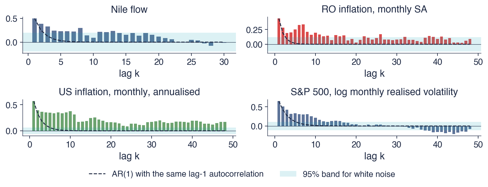
Bars: sample ACF; dashed line: \(\hat\rho(1)^k\), the ACF of an AR(1) with the same lag-1 autocorrelation; shaded: \(\pm 1.96/\sqrt{T}\)
For the Nile, the first sample autocorrelation is \(\hat\rho(1) = 0.50\). An AR(1) with this coefficient would have \(\rho(10) = 0.0009\), but the sample autocorrelation at lag 10 is 0.09, a hundred times larger, and 11 of the first 30 autocorrelations lie above the white-noise band. For Romanian monthly inflation, \(\hat\rho(1) = 0.44\) and \(\hat\rho(10) = 0.20\), and 22 of 48 lags are above the band. US monthly inflation is the most extreme case: all 48 autocorrelations are above the band. The log realised volatility of the S&P 500 has 15 of 48 lags above the band; its autocorrelations turn slightly negative beyond lag 30, a downward bias of the sample ACF of persistent series discussed later in the chapter.
The pattern common to the four panels is a moderate first autocorrelation followed by a long tail that decays slowly. An AR(1) cannot produce it: if its coefficient is chosen to match the first lag, its tail dies out far too fast; if the coefficient is chosen large enough to produce the tail, the first lag comes out far too high. This combination is the empirical signature of long memory, and the ARFIMA model of Section 3 reproduces it with a single parameter.
In brief
Nile: \(\hat\rho(1) = 0.50\); an AR(1) would give \(\rho(10) = 0.0009\), the data give 0.09
11 of the first 30 autocorrelations lie above the white-noise band
Romanian monthly inflation: \(\hat\rho(1) = 0.44\), \(\hat\rho(10) = 0.20\); 22 of 48 lags above the band
US monthly inflation: 48 of 48; S&P 500 log realised volatility: 15 of 48
A low first autocorrelation with a long, slowly decaying tail is the signature of long memory; an AR(1) cannot produce it
The chart moves from data to theory. It shows the theoretical ACF of an ARFIMA\((0,d,0)\) process with \(d = 0.4\), the long-memory model defined in the next sections, together with the ACF of an AR(1) chosen to have the same first autocorrelation, \(\rho(1) = d/(1-d) = 0.667\). The left panel uses ordinary axes and lags up to 50; the right panel uses logarithmic scales on both axes and lags up to 1000.
On ordinary axes the two curves start at the same point and separate quickly: the AR(1) falls almost to zero within 10 lags, the ARFIMA curve flattens and stays above 0.3. On log–log axes the difference becomes a difference of shape. Taking logarithms of \(\rho(k) \sim Ck^{2d-1}\) gives \(\log\rho(k) \approx \log C + (2d-1)\log k\), a straight line in \(\log k\); taking logarithms of \(\phi^k\) gives \(k\log\phi\), which is linear in \(k\), not in \(\log k\), and therefore bends downwards on a log–log plot.
In brief
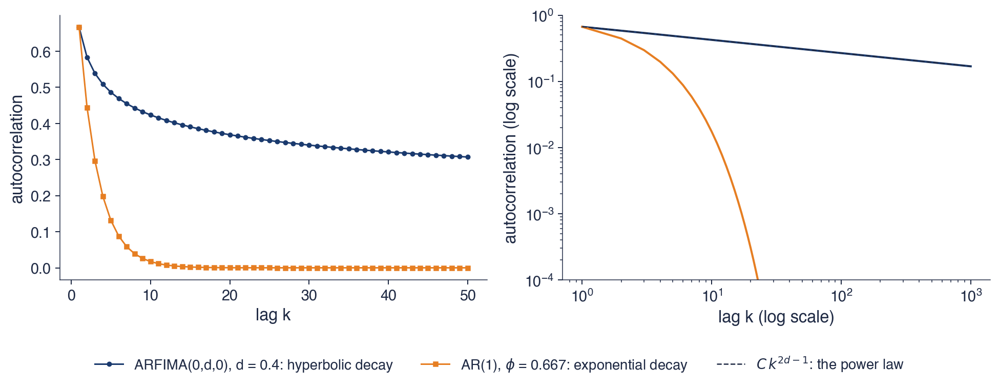
Theoretical ACF of ARFIMA\((0,d,0)\) with \(d = 0.4\) (next sections) and of an AR(1) with the same \(\rho(1) = d/(1-d) = 0.667\); right: both on log–log axes, with the power law \(C k^{2d-1}\)
The two processes have the same first autocorrelation but very different tails. At lag 10 the ARFIMA autocorrelation is 0.424 and the AR(1) autocorrelation 0.017; at lag 50 the values are 0.307 and \(1.6 \cdot 10^{-9}\). The long-memory ACF is still 0.169 at lag 1000, where the AR(1) has long since become indistinguishable from zero.
On the log–log plot, the hyperbolic ACF is a straight line with slope \(2d - 1 = -0.2\). This observation is the idea behind every estimator in Section 4: long memory turns into a straight line on a log–log plot, and \(d\) can be read from its slope. The R/S and DFA methods look at the slope of a log–log plot of variability against block size, and the GPH method at the slope of the log periodogram against log frequency.
The sums of the autocorrelations show why long memory is called non-summable. For the AR(1), \(\sum_{k \ge 1}\phi^k = \phi/(1-\phi) = 2.0\). For the ARFIMA process, the sum is 33.0 up to lag 100 and 210.4 up to lag 1000, and it keeps growing without limit as more lags are added.
In brief
Same start, different tails: at lag 10, 0.424 against 0.017; at lag 50, 0.307 against \(1.6 \cdot 10^{-9}\)
the long-memory ACF is still 0.169 at lag 1000
On log–log axes the hyperbolic ACF becomes a straight line of slope \(2d - 1 = -0.2\); the exponential ACF bends down
the slope of a log–log plot is the idea behind every estimator of this chapter
Sums of autocorrelations: AR(1) \(\sum_{k\ge1}\phi^k = 2.0\); ARFIMA: 33.0 up to lag 100 and 210.4 up to lag 1000, still growing
Short memory, typical of ARMA processes, means summable autocorrelations that decay exponentially and a finite spectral density at frequency zero. Long memory means \(\rho(k) \sim Ck^{2d-1}\), a non-summable ACF and a spectral pole \(f(\lambda) \sim G\lambda^{-2d}\). Hurst found on the Nile that ranges grow like \(n^H\) with \(H > 1/2\), and inflation and volatility show the same long, slowly decaying autocorrelation tails.
In brief
Short memory: summable ACF, exponential decay, finite spectrum at zero (ARMA)
Long memory: \(\rho(k) \sim Ck^{2d-1}\), non-summable ACF, spectral pole \(f(\lambda) \sim G\lambda^{-2d}\)
Hurst and the Nile: ranges grow like \(n^H\), \(H > 1/2\)
Inflation and volatility show long, slowly decaying ACF tails
Section summary
Long memory is a statement about the tail of the autocorrelation function: the autocorrelations decay like a power of the lag, slowly enough that their sum is infinite, and the spectral density has a pole at frequency zero. The Nile, inflation and volatility combine a moderate first autocorrelation with a long tail that no AR(1) can match. On a log–log plot a power law is a straight line, and its slope, \(2d - 1\), is what the estimators of the chapter will measure.
Fractional differencing
An ARIMA model differences a series an integer number of times: \(d = 0\) keeps the level, \(d = 1\) takes first differences. Long-memory series need something in between. This section defines the fractional difference \((1-L)^d\) for any real \(d\), computes its weights, shows its inverse, fractional integration, and applies it to the price of the S&P 500 to find the smallest degree of differencing that makes a price stationary.
The lag operator shifts a series by one period, \(Lx_t = x_{t-1}\), and the first difference of Chapter 3 is \((1-L)x_t = x_t - x_{t-1}\). Powers of \((1-L)\) are defined by multiplying out: \(d = 0\) leaves the level unchanged, \(d = 1\) gives the first difference, and \(d = 2\) gives \((1-L)^2x_t = x_t - 2x_{t-1} + x_{t-2}\). For integer \(d\) the expansion stops after \(d + 1\) terms.
For a real \(d\), the binomial series extends the definition:
Here \(\binom{d}{k} = d(d-1)\cdots(d-k+1)/k!\) is the binomial coefficient for real \(d\) and \(\pi_k\) is the weight of \(x_{t-k}\). Written out, \((1-L)^d = 1 - dL - \frac{d(1-d)}{2!}L^2 - \frac{d(1-d)(2-d)}{3!}L^3 - \dots\). The recursion in (8.2) is the practical way to compute the weights: each one is the previous one multiplied by \((k-1-d)/k\).
For integer \(d\) the factor \((k-1-d)\) eventually becomes zero and the series stops. For non-integer \(d\) it never does, so a fractional difference uses all past values of the series. For large \(k\) the weights behave like \(\pi_k \approx -\frac{d}{\Gamma(1-d)}\,k^{-1-d}\), where \(\Gamma(\cdot)\) is the gamma function, which extends the factorial to real numbers, with \(\Gamma(n) = (n-1)!\) for integers. The weights therefore decay hyperbolically. A fractional difference removes part of the memory of a series, but not all of it.
In brief
Lag operator: \(Lx_t = x_{t-1}\); first difference \((1-L)x_t = x_t - x_{t-1}\) (Chapter 3)
\(d = 0\): the level; \(d = 1\): the first difference; \(d = 2\): \(x_t - 2x_{t-1} + x_{t-2}\)
Fractional difference for any real \(d\) (binomial series)
recursion: \(\pi_0 = 1\), \(\pi_k = \pi_{k-1}\,\dfrac{k - 1 - d}{k}\); for large \(k\): \(\pi_k \approx -\dfrac{d}{\Gamma(1-d)}\,k^{-1-d}\)
\(\binom{d}{k} = d(d-1)\cdots(d-k+1)/k!\): the binomial coefficient for real \(d\); \(\pi_k\): the weight of \(x_{t-k}\); \(\Gamma(\cdot)\): the gamma function, \(\Gamma(n) = (n-1)!\) for integers
A fractional difference uses all past values, with weights that decay hyperbolically: it removes part of the memory, not all of it
The recursion of (8.2) with \(d = 0.4\) gives the weights one at a time. Starting from \(\pi_0 = 1\):\(\pi_1 = 1 \cdot (0 - 0.4)/1 = -0.40\);\(\pi_2 = -0.40 \cdot (1 - 0.4)/2 = -0.12\);\(\pi_3 = -0.12 \cdot (2 - 0.4)/3 = -0.0640\);\(\pi_4 = -0.0640 \cdot 3.6/4 = -0.0416\); and \(\pi_5 = -0.0300\). The fractionally differenced series is therefore
All weights after the first are negative and decrease slowly in absolute value. Their sum over all lags is \((1-1)^{0.4} = 0\), obtained by setting \(L = 1\) in \((1-L)^{0.4}\). A constant level \(x_t = c\) is therefore removed completely, exactly as with the first difference, but the constant is subtracted using a long weighted average of the past rather than only the previous value.
The comparison with other values of \(d\) shows the role of the parameter. For \(d = 1\),\(\pi_1 = -1\) and all other weights are zero: only the previous value matters. For \(d = 0.7\),\(\pi_1 = -0.70\) and \(\pi_2 = -0.105\): the first weight is closer to \(-1\) and the later ones are smaller. As \(d\) grows from 0 to 1, the weight moves from the distant past towards the most recent observation.
The left panel shows the weights \(\pi_k\) of \((1-L)^d\) for the first ten lags and four values of \(d\): 0.2, 0.4, 0.7 and 1. For \(d = 1\) there is a single bar at lag 1, of height \(-1\). For the fractional values, the first weight equals \(-d\) and the following ones are small negative numbers that shrink slowly; the larger \(d\), the larger the first weight in absolute value.
The right panel shows the inverse operation. Fractional integration, \((1-L)^{-d}\), turns a white noise into a long-memory series, and its coefficients \(\psi_k\) are the impulse responses: the effect after \(k\) periods of a unit shock. The horizontal axis is logarithmic, from 1 to 200 periods. The responses of the fractionally integrated series are compared with those of an AR(1) with \(\phi = 0.9\), the dashed line, and with the random walk, \(d = 1\), for which the response stays at 1.
In brief
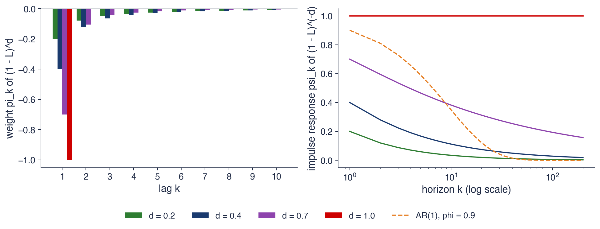
Left: weights \(\pi_k\) of \((1-L)^d\); right: the impulse responses \(\psi_k\) of \((1-L)^{-d}\), i.e. the effect after \(k\) periods of a unit shock to a fractionally integrated series, against an AR(1) with \(\phi = 0.9\)
with \(\psi_0 = 1\) and, for large \(k\),\(\psi_k \approx k^{d-1}/\Gamma(d)\). The impulse responses decay like a power of the horizon. After 100 periods a unit shock still has a weight of 0.028 when \(d = 0.4\) and of 0.193 when \(d = 0.7\); the AR(1) with \(\phi = 0.9\) keeps only \(0.9^{100} = 2.7 \cdot 10^{-5}\).
The chart shows that the comparison is not one-sided. Early on, the AR(1) remembers more: at lag 10 its response is 0.349, against 0.112 for \(d = 0.4\). Later it forgets much faster, and the curves cross. Exponential memory is strong and short, hyperbolic memory is weak and long. For \(d = 1\), the random walk, \(\psi_k = 1\) at every horizon and the shock never fades.
For any \(0 < d < 1\) the responses tend to zero, so the effect of every shock eventually disappears: the series is mean-reverting. This holds even when the series is non-stationary, for \(0.5 \le d < 1\). Fractional integration therefore separates two properties that coincide for integer \(d\): a series can have an infinite variance in the limit, and so be non-stationary, and still return to its mean after every shock.
The chart applies fractional differencing to the logarithm of the daily S&P 500 index, 6715 days since 2000. For each \(d\) from 0 to 1 in steps of 0.05, the series \((1-L)^d\log P_t\) is computed with a fixed window: the weights are truncated where they fall below \(10^{-4}\) in absolute value, so that every observation is computed with the same number of past values.
Two quantities are plotted against \(d\). The left panel gives the statistic of the augmented Dickey–Fuller (ADF) test of Chapter 3, whose null hypothesis is a unit root; the dashed horizontal line is its 5% critical value, \(-2.86\), and values below it reject the unit root. The right panel gives the correlation between the differenced series and the original log level. The first measures how stationary the transformed series looks, the second how much information about the level it keeps.
In brief
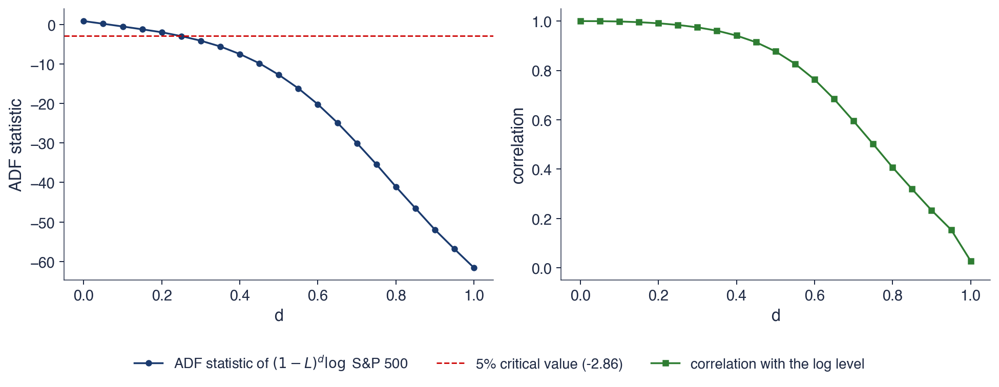
Log S&P 500, daily, 6 715 days since 2000; \((1-L)^d\) with a fixed window (weights below \(10^{-4}\) dropped), \(d = 0, 0.05, \dots, 1\); left: ADF statistic (Chapter 3); right: correlation with the log level
At the two ends of the chart are the familiar cases. The log level, \(d = 0\), has an ADF statistic of 0.84, far from the critical value, consistent with a unit root. The daily return, \(d = 1\), has an ADF statistic of \(-61.6\) and rejects the unit root overwhelmingly, but its correlation with the log level is only 0.03. The first difference achieves stationarity by throwing away almost all the information about where the price is.
Between the ends, the ADF statistic crosses the 5% critical value already at \(d = 0.25\). At that point the correlation with the log level is still 0.984, and the fixed window uses 445 weights. A series differenced to the order 0.25 rejects the unit root at 5% while remaining almost perfectly correlated with the price.
This is the idea behind the use of fractional differencing in machine learning for finance, which returns in Chapter 9. Many learning methods need stationary inputs, and first differences make inputs stationary at the cost of erasing the level. The smallest \(d\) that passes a unit-root test gives an input that is stationary in the sense of the test and still carries most of the memory of the original series.
In brief
The log level (\(d = 0\)) has a unit root (ADF 0.84); the return (\(d = 1\)) is stationary (ADF \(-\)61.6) but has correlation 0.03 with the level
the first difference throws away all the information about the level
The ADF statistic crosses the 5% critical value (\(-\)2.86) already at \(d = 0.25\), where the correlation with the level is still 0.984
the fixed window then has 445 weights
A fractional difference can make a series stationary while keeping most of its memory: a tool used for forecasting features in machine learning (Chapter 9)
The fractional difference \((1-L)^d = \sum_k \pi_k L^k\) has weights given by the recursion \(\pi_k = \pi_{k-1}(k-1-d)/k\), which decay hyperbolically. Its inverse \((1-L)^{-d}\) has impulse responses \(\psi_k \approx k^{d-1}/\Gamma(d)\), and shocks fade, so the series reverts to its mean, whenever \(d < 1\). Values of \(d\) between 0 and 1 fill the gap between levels and first differences.
\((1-L)^{-d}\): impulse responses \(\psi_k \approx k^{d-1}/\Gamma(d)\); mean reversion for \(d < 1\)
\(d\) between 0 and 1 fills the gap between levels and first differences
Section summary
The fractional difference generalises the first difference to any real order. Its weights reach into the whole past and decay like a power of the lag, and its inverse produces impulse responses that fade slowly but surely whenever \(d < 1\). On the S&P 500, a fractional difference of order 0.25 already rejects the unit root at 5% while keeping a correlation of 0.984 with the log price, whereas the first difference keeps almost none.
The ARFIMA\((p,d,q)\) model
Combining the fractional difference with the ARMA polynomials of Chapter 2 gives the ARFIMA model, the standard parametric model for long memory. This section defines it, explains what each range of \(d\) implies, derives the autocorrelations of the simplest case, ARFIMA\((0,d,0)\), simulates two paths and connects the model with Mandelbrot's fractional Brownian motion and the Hurst exponent.
where \(\varepsilon_t\) is white noise with variance \(\sigma^2\),\(\mu\) is the mean of \(x_t\), and \(\phi(L) = 1 - \phi_1L - \dots - \phi_pL^p\) and \(\theta(L) = 1 + \theta_1L + \dots + \theta_qL^q\) are the autoregressive and moving-average polynomials of Chapter 2, with all roots outside the unit circle. In words: once the series is fractionally differenced, what remains is a stationary ARMA process.
The model gives its two parts two different jobs. The parameter \(d\) governs the long run, the hyperbolic tail of the ACF at large lags. The polynomials \(\phi(L)\) and \(\theta(L)\) govern the short run, the first few autocorrelations, whose effect dies out exponentially. This division is what makes the model useful: an ARMA model alone has to stretch its parameters to imitate a slow tail, whereas ARFIMA describes the tail with \(d\) and leaves the ARMA part free for the short-run dynamics.
The familiar models are special cases. With \(d = 0\),(8.4) is an ARMA\((p,q)\) model; with \(d = 1\) it is an ARIMA\((p,1,q)\) model of Chapter 3. For values of \(d\) between them the series is fractionally integrated of order \(d\), written \(x_t \sim I(d)\).
In brief
Definition: \(\phi(L)(1-L)^d(x_t - \mu) = \theta(L)\varepsilon_t\), \(\varepsilon_t\) white noise with variance \(\sigma^2\)
\(\phi(L) = 1 - \phi_1L - \dots - \phi_pL^p\) and \(\theta(L) = 1 + \theta_1L + \dots + \theta_qL^q\), with roots outside the unit circle (Chapter 2)
\(\mu\): the mean of \(x_t\); ARFIMA: autoregressive fractionally integrated moving average
Two parts with two jobs
\(d\): the long-run memory, the hyperbolic tail of the ACF
\(\phi\), \(\theta\): the short-run dynamics, the first few autocorrelations
Special cases: \(d = 0\): ARMA\((p,q)\); \(d = 1\): ARIMA\((p,1,q)\) (Chapter 3); \(d\) between them: fractional integration, \(x_t \sim I(d)\)
Fractional differencing was introduced independently by Granger and Joyeux (1980) and Hosking (1981). Granger and Joyeux motivated the model by aggregation: adding up many AR(1) series with different degrees of persistence, as when national output sums the output of many firms, produces a series with long memory, even though each component has short memory. Hosking derived the autocorrelation function of the fractionally integrated process, the conditions for stationarity and invertibility, and defined the ARFIMA\((p,d,q)\) family.
Their model connected two traditions that had developed separately. Hydrologists had Hurst's exponent and Mandelbrot's fractional processes, while econometricians had the Box–Jenkins ARIMA models. ARFIMA places Hurst's phenomenon inside the Box–Jenkins framework, with a parameter that can be estimated and tested like any other.
Applications followed in many areas of economics: inflation, studied across countries by Hassler and Wolters (1995), output, interest rates and, through Ding, Granger and Engle (1993), the volatility of financial returns. Clive Granger, shown in the photograph, received the Nobel Prize in economics in 2003, shared with Robert Engle.
The table lists what the value of \(d\) implies. For \(d \le -0.5\) the process is not invertible: it has no AR(\(\infty\)) form, so it cannot be written as a function of its own past, which forecasting requires. For \(-0.5 < d < 0\) the process is stationary, invertible and anti-persistent: its autocorrelations are negative, and summed over all positive lags they give exactly \(-1/2\). For \(d = 0\) the model is an ARMA with short memory and exponential decay. For \(0 < d < 0.5\) it is stationary with long memory, and its autocorrelations decay hyperbolically and are not summable.
The last two rows are non-stationary. For \(0.5 \le d < 1\) the variance of the process grows without bound, but shocks fade, slowly: the series is mean-reverting. For \(d = 1\) the model has a unit root, and shocks are permanent. Hosking (1981) established the two boundaries: stationarity requires \(d < 1/2\) and invertibility requires \(d > -1/2\). A non-stationary series with \(d < 1.5\) is handled by differencing once, since \((1-L)x_t \sim I(d-1)\) and \(d - 1\) is then below 1/2.
The Hurst exponent of the stationary increments is \(H = d + 1/2\). Values \(H > 1/2\) mean persistence, \(H < 1/2\) anti-persistence, and \(H = 1/2\) the absence of memory. The relation lets one move between the estimators that report \(H\) (R/S and DFA) and those that report \(d\).
In brief
Range of \(d\)
Properties
ACF / shocks
\(d \le -0.5\)
not invertible (no AR(\(\infty\)) form)
–
\(-0.5 < d < 0\)
stationary, invertible, anti-persistent
negative, summable to \(-1/2\)
\(d = 0\)
ARMA, short memory
exponential decay
\(0 < d < 0.5\)
stationary, long memory
hyperbolic, not summable
\(0.5 \le d < 1\)
non-stationary, mean-reverting
shocks fade, slowly
\(d = 1\)
unit root, ARIMA
shocks are permanent
Stationarity needs \(d < 1/2\), invertibility needs \(d > -1/2\) (Hosking (1981)); a non-stationary series with \(d < 1.5\) is handled by differencing once: \((1-L)x_t \sim I(d-1)\)
Hurst exponent of the stationary increments: \(H = d + 1/2\); \(H > 1/2\) persistence, \(H < 1/2\) anti-persistence
For the pure fractional noise \(x_t = (1-L)^{-d}\varepsilon_t\) with \(-1/2 < d < 1/2\),Hosking (1981) obtained closed forms. The variance is \(\gamma(0) = \sigma^2\,\Gamma(1-2d)/\Gamma(1-d)^2\), and the autocorrelations satisfy
The recursion is the practical form. It starts from \(\rho(0) = 1\) and gives \(\rho(1) = d/(1-d)\) and \(\rho(2) = d(1+d)/[(1-d)(2-d)]\).
For large \(k\), the ratio of gamma functions behaves like a power, and \(\rho(k) \approx \frac{\Gamma(1-d)}{\Gamma(d)}\,k^{2d-1}\). This is exactly the power law of (8.1), with the constant \(C = \Gamma(1-d)/\Gamma(d)\). For \(d > 0\) all autocorrelations are positive and decay hyperbolically; for \(d < 0\) they are all negative.
The spectral density follows from the transfer function of \((1-L)^{-d}\):\(f(\lambda) = \frac{\sigma^2}{2\pi}|1 - e^{-i\lambda}|^{-2d} = \frac{\sigma^2}{2\pi}\bigl(2\sin(\lambda/2)\bigr)^{-2d}\), where \(i\) is the imaginary unit. Near zero, \(2\sin(\lambda/2) \approx \lambda\), so \(f(\lambda) \approx \frac{\sigma^2}{2\pi}\lambda^{-2d}\): the spectral pole of (8.1) with \(G = \sigma^2/(2\pi)\). This exact form of the spectrum is what the GPH and Whittle estimators of Section 4 use.
In brief
For \(x_t = (1-L)^{-d}\varepsilon_t\), \(-1/2 < d < 1/2\) (Hosking (1981)):
With \(d = 0.3\), the recursion of (8.5) gives \(\rho(1) = 0.3/0.7 = 0.429\),\(\rho(2) = 0.429 \cdot 1.3/1.7 = 0.328\) and \(\rho(3) = 0.328 \cdot 2.3/2.7 = 0.279\). Continuing in the same way, \(\rho(5) = 0.228\) and \(\rho(10) = 0.173\). The autocorrelations fall quickly at first and then very slowly.
The variance with \(\sigma^2 = 1\) is \(\Gamma(0.4)/\Gamma(0.7)^2 = 1.316\), larger than the variance of the shocks. The difference measures how much the memory accumulates: each observation contains not only the current shock but a slowly decaying sum of all past shocks.
The comparison with an AR(1) is again striking. An AR(1) with the same \(\rho(1) = 0.429\) has \(\rho(10) = 0.429^{10} = 0.0002\), three orders of magnitude below the 0.173 of the ARFIMA process. The Hurst exponent of this process is \(H = d + 0.5 = 0.8\), which describes a strongly persistent series.
The chart shows two simulated ARFIMA\((0,d,0)\) processes driven by standard Normal shocks, \(\varepsilon_t \sim N(0,1)\):\(d = 0.4\) at the top and \(d = -0.4\) at the bottom. Each path has 1000 observations and is simulated exactly by circulant embedding, a method that generates a Gaussian series with a given autocovariance function through the fast Fourier transform.
The right panels compare the sample ACF, computed from a longer simulation of 20,000 observations, with the theoretical ACF of (8.5). For \(d = 0.4\) the theoretical curve starts at 0.667 and decays slowly; the sample bars follow its shape but lie slightly below it. For \(d = -0.4\) the first autocorrelation is strongly negative and the following ones are close to zero.
In brief
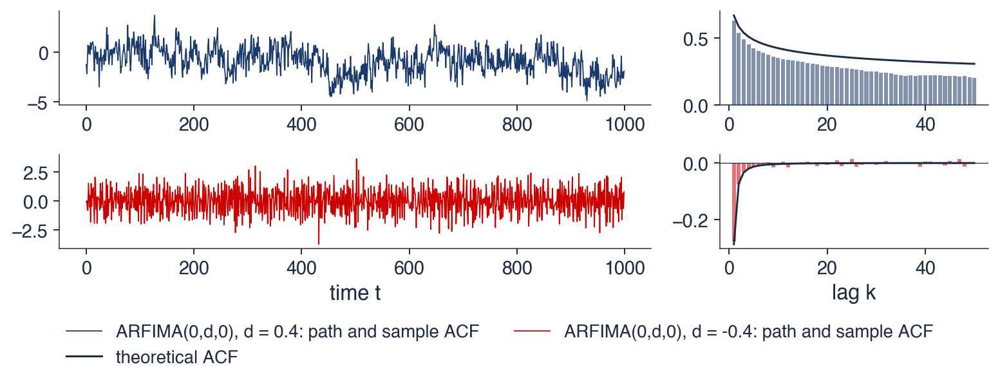
Simulated paths (1000 observations, exact simulation by circulant embedding) with \(\varepsilon_t \sim N(0, 1)\); right: sample ACF of 20 000 observations and the theoretical ACF
The path with \(d = 0.4\) makes long excursions above and below zero, of several hundred observations each. Its ACF is the hyperbolic one of Section 1, and its theoretical variance is 2.07, about twice the variance of the shocks. The path looks as if it had trends, although the mean of the process is constant and equal to zero. This is one reason why long memory is easily mistaken for non-stationarity, and why a unit-root test can struggle with such series. The sample ACF lies below the theoretical one because the sample mean absorbs part of the slow excursions, a downward bias that is typical of long-memory series.
The path with \(d = -0.4\) zig-zags rapidly around zero. Its autocorrelations are \(\rho(1) = -0.286\) and \(\rho(2) = -0.071\), and its variance is 1.18. This is anti-persistence: a rise tends to be followed by a fall. Anti-persistence is typical of over-differenced series. If a series with \(d = 0.6\) is differenced once, the result has \(d = 0.6 - 1 = -0.4\), and the negative autocorrelations are a sign that the first difference removed more memory than the series had.
In brief
\(d = 0.4\): long excursions above and below zero; the hyperbolic ACF of Section 1; variance 2.07
the path looks as if it had trends, although the mean is constant: a reason why long memory is mistaken for non-stationarity
Mandelbrot and Van Ness (1968) defined fractional Brownian motion \(B_H(t)\) for \(0 < H < 1\): a Gaussian process in continuous time with \(B_H(0) = 0\) and \(\mathrm{Var}(B_H(t)) = t^{2H}\). Its key property is self-similarity: \(B_H(ct)\) has the same distribution as \(c^H B_H(t)\) for every \(c > 0\), so a stretch of the path, magnified in time by \(c\) and in height by \(c^H\), looks statistically the same as the whole. For \(H = 1/2\) it is ordinary Brownian motion, the continuous-time random walk.
The increments of fractional Brownian motion over unit intervals form fractional Gaussian noise (fGn), a stationary series with autocorrelations
For large \(k\),\(\rho(k) \approx H(2H-1)k^{2H-2}\). The exponent \(2H - 2\) equals \(2d - 1\) when \(d = H - 1/2\), so fGn has the same hyperbolic tail as an ARFIMA process with that \(d\).
Mandelbrot brought Hurst's empirical finding into probability and statistics. Fractional Gaussian noise is the continuous-time cousin of ARFIMA\((0,d,0)\): both have one parameter for memory, and both have the same tail behaviour.
The left panel shows three paths of fractional Brownian motion with \(H = 0.3\),\(H = 0.5\) and \(H = 0.7\), simulated by circulant embedding from the same random numbers, so that the differences between the paths come only from \(H\). The right panel shows the first 150 increments of each path, that is, the corresponding fractional Gaussian noise.
The increments in the right panel look almost identical, because they are driven by the same random numbers and differ only through small correlations. The paths in the left panel, which add up the increments, look very different: the persistent path (\(H = 0.7\)) wanders far from zero, the Brownian motion (\(H = 0.5\)) less, and the anti-persistent path (\(H = 0.3\)) stays close to zero. Small correlations between consecutive increments accumulate into large differences in the cumulative sum.
In brief
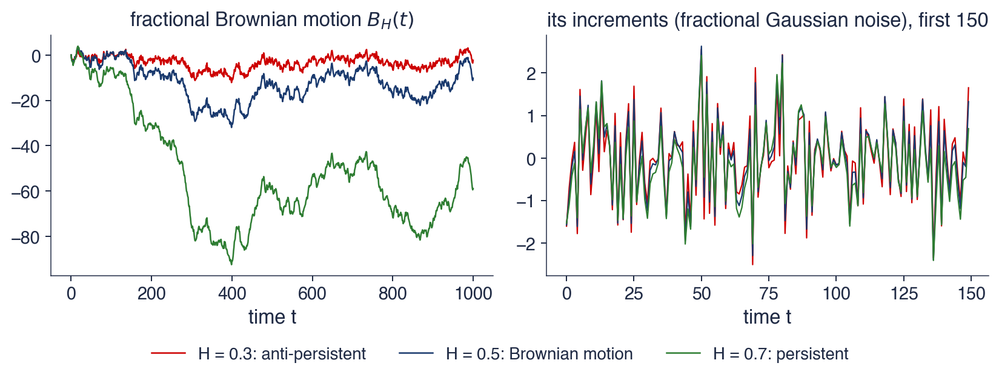
The same random numbers for \(H = 0.3\), \(0.5\) and \(0.7\) (circulant embedding); right: the first 150 increments
For \(H = 0.7\) the path is smooth and trending. The lag-1 autocorrelation of its increments is \(2^{2H-1} - 1 = 0.32\), and the sample value is also 0.32, so consecutive increments tend to have the same sign and the path keeps moving in the same direction. For \(H = 0.3\) the path is rough and keeps turning back: \(\rho(1) = -0.24\) in theory and \(-0.23\) in the sample.
The range of the path over a time span \(t\) grows like \(t^H\). This is precisely the quantity that Hurst measured on the Nile, and the reason why his exponent and Mandelbrot's \(H\) are the same parameter.
In time-series modelling ARFIMA is usually preferred to fGn. Fractional Gaussian noise has a single parameter and cannot describe short-run dynamics, whereas ARFIMA adds the ARMA polynomials that fit the first few autocorrelations separately from the long-run tail.
In brief
\(H = 0.7\): smooth, trending path; lag-1 autocorrelation of the increments \(2^{2H-1} - 1 = 0.32\) (sample 0.32)
The ARFIMA model \(\phi(L)(1-L)^d(x_t - \mu) = \theta(L)\varepsilon_t\) uses \(d\) for the long run and the ARMA part for the short run. It is stationary for \(d < 1/2\), invertible for \(d > -1/2\) and mean-reverting for \(d < 1\). ARFIMA\((0,d,0)\) has \(\rho(1) = d/(1-d)\) and \(\rho(k) \sim Ck^{2d-1}\), and its Hurst exponent is \(H = d + 1/2\). Fractional Brownian motion and fractional Gaussian noise express the same long memory in Mandelbrot's continuous-time form.
In brief
\(\phi(L)(1-L)^d(x_t - \mu) = \theta(L)\varepsilon_t\): \(d\) for the long run, ARMA for the short run
Stationary for \(d < 1/2\), invertible for \(d > -1/2\); mean-reverting for \(d < 1\)
fBm and fGn: the same long memory in Mandelbrot's continuous-time form
Section summary
ARFIMA separates the two kinds of memory: \(d\) controls the hyperbolic tail of the autocorrelations, the ARMA polynomials the first lags. The value of \(d\) classifies the process as anti-persistent, short-memory, long-memory stationary, non-stationary but mean-reverting, or unit-root. For ARFIMA\((0,d,0)\) the autocorrelations follow a simple recursion, and their tail is the same power law as that of Mandelbrot's fractional Gaussian noise with \(H = d + 1/2\).
Estimating \(d\)
Everything in the chapter so far assumed that \(d\) is known. In practice it must be estimated, and the estimate is less precise than for ARMA parameters, because the information about \(d\) lies in the slowest cycles of the series, of which any sample contains only a few. This section presents five estimators, from Hurst's graphical method to exact maximum likelihood, compares them in a simulation, applies them to Romanian inflation and to twelve real series, and shows how much the answer can depend on choices made by the analyst.
The table classifies the five estimators of the chapter by the information they use and by what they assume. R/S, proposed by Hurst (1951), uses the range of partial sums in blocks of observations; DFA, from Peng et al. (1994), uses the fluctuations of the cumulative series around local trends. Both estimate \(H\) as the slope of a log–log plot and are heuristic: in their basic form they give no standard error.
GPH, from Geweke and Porter-Hudak (1983), and local Whittle, from Robinson (1995), use only the \(m\) lowest ordinates of the periodogram, the sample counterpart of the spectral density. GPH computes the slope of an OLS regression of the log periodogram, while local Whittle maximises a local Gaussian likelihood. Both are semiparametric: they model only the behaviour of the spectrum near frequency zero, where (8.1) holds, and leave the short-run part free.
Exact maximum likelihood (ML), from Sowell (1992), and its frequency-domain approximation by Fox and Taqqu (1986), the Whittle estimator, use the whole series and estimate \(d\) together with the ARMA parameters \(\phi\),\(\theta\) and the variance \(\sigma^2\). They are parametric: they are the most precise when the whole ARFIMA model is correctly specified, and can be badly wrong when it is not. The relation \(d = H - 1/2\) converts between the two scales.
The rescaled range of a block \(x_1, \dots, x_n\) is computed in four steps. First compute the mean \(\bar x\) of the block. Then compute the cumulative deviations from the mean, \(Y_k = \sum_{i \le k}(x_i - \bar x)\), which form the "profile" of the block and end at \(Y_n = 0\). The range is \(R = \max_k Y_k - \min_k Y_k\), the quantity Hurst needed for reservoirs. Finally, divide by the standard deviation \(S\) of the block, which makes the statistic free of the units of measurement.
In the example, the block \(x = (0.5, -0.3, 0.8, -0.2, 0.6, -0.1, 0.4, -0.7)\) has mean \(\bar x = 0.125\). The cumulative deviations are 0.375, \(-0.050\), 0.625, 0.300, 0.775, 0.550, 0.825 and 0, so the range is \(R = 0.825 - (-0.050) = 0.875\). With the standard deviation \(S = 0.489\), computed with divisor \(n\), the rescaled range is \(R/S = 1.79\).
To estimate the Hurst exponent, the series is split into blocks of size \(n\),\(R/S\) is averaged over the blocks, and the procedure is repeated for many block sizes. Since \(E(R/S)_n \approx c\,n^H\), the exponent \(H\) is the slope of \(\log(R/S)_n\) against \(\log n\). The method has known pitfalls: it is biased upwards in small blocks (Mandelbrot and Wallis, 1969), and short memory also raises it. Lo (1991) corrected the denominator \(S\) with autocovariances, giving the modified R/S statistic. Detrended fluctuation analysis, DFA (Peng et al., 1994), fits a straight line to the profile \(Y_k\) within each block; the root mean square (RMS) of the deviations from these lines, \(F(n)\), grows like \(n^H\), and fitting local trends makes the method less sensitive to slow drifts.
Hurst exponent: average \((R/S)_n\) over blocks of size \(n\); \(E(R/S)_n \approx c\,n^H\), so \(H\) is the slope of \(\log(R/S)_n\) on \(\log n\)
pitfalls: biased upwards in small blocks Mandelbrot and Wallis (1969); short memory also raises it; Lo (1991) corrects \(S\) with autocovariances (modified R/S)
DFAPeng et al. (1994): fit a line to the profile \(Y_k\) in each block; \(F(n)\), the RMS (root mean square) deviation, grows like \(n^H\)
The chart applies R/S (left) and DFA (right) to three series: US monthly inflation from FRED (the consumer price index, CPIAUCSL, 1947–2026), daily S&P 500 returns \(r_t\) and their absolute values \(|r_t|\) (2000–2026). Both axes are logarithmic, and every curve is normalised to 1 at block size \(n = 10\), so that the slopes can be compared directly. The dashed line has slope 0.5, the value expected without memory.
A curve that runs parallel to the dashed line indicates no memory; a steeper curve indicates persistence. The legend reports the fitted slope for each series and method.
In brief
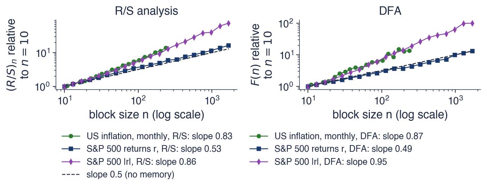
US monthly inflation (FRED CPIAUCSL, 1947–2026), daily S&P 500 returns \(r_t\) and absolute returns \(|r_t|\) (2000–2026); both axes logarithmic, curves normalised to 1 at \(n = 10\)
For S&P 500 returns the slopes are 0.53 with R/S and 0.49 with DFA, both close to 0.5: the returns show no memory. This agrees with the weak-form efficiency discussed in Chapter 3: past returns contain little information about the direction of future returns.
For absolute returns the slopes are 0.86 and 0.95, and for US inflation 0.83 and 0.87. Both series are clearly persistent. A DFA slope near 1 corresponds to \(d = H - 1/2\) near 0.5, at the edge of stationarity, so for these series the question of whether \(d\) is below or above 0.5 is a real one.
R/S and DFA are graphical tools. They give no standard error, so they cannot say whether a slope of 0.58 differs significantly from 0.5, and they react to short memory and to trends as well as to long memory. The estimators that follow are built for statistical inference.
In brief
S&P 500 returns: slopes 0.53 (R/S) and 0.49 (DFA), close to 0.5: no memory in returns
the weak efficiency of Chapter 3 holds for the level of returns
Absolute returns: 0.86 and 0.95; US inflation: 0.83 and 0.87
both well above 0.5: persistent; a DFA slope near 1 hints at \(d\) close to 0.5, the edge of stationarity
These are graphical tools: they give no standard error and react to short memory and trends; the next estimators are built for inference
The periodogram is the sample counterpart of the spectral density. At the Fourier frequencies \(\lambda_j = 2\pi j/T\),\(j = 1, \dots, \lfloor T/2 \rfloor\), it is \(I(\lambda_j) = \frac{1}{2\pi T}\bigl|\sum_t (x_t - \bar x)e^{-i\lambda_j t}\bigr|^2\), where \(|\cdot|\) is the modulus of a complex number. The frequency \(\lambda_j\) corresponds to a cycle of \(T/j\) periods, so the first ordinates describe the slowest cycles in the sample. Each ordinate is a noisy estimate of \(f(\lambda_j)\): approximately an exponential random variable with mean \(f(\lambda_j)\), so the periodogram does not become smoother as \(T\) grows.
Near frequency zero, the spectrum of an ARFIMA process behaves like \(f(\lambda) \approx G\,(4\sin^2(\lambda/2))^{-d}\). Taking logarithms and replacing \(f\) by the periodogram gives the regression of Geweke and Porter-Hudak (1983):
\[\begin{aligned} \log I(\lambda_j) = c &+ d\,\bigl[-\log(4\sin^2(\lambda_j/2))\bigr] + u_j, \\ j &= 1, \dots, m, \end{aligned}\]
(8.6)
where \(c\) is a constant and \(u_j\) the regression error. The GPH estimate \(\hat d\) is the OLS slope, and its standard error is \(\pi/\sqrt{24m}\). With the regressor written as \(-\log(4\sin^2(\lambda_j/2))\) the slope is \(d\) itself; with \(\log\lambda_j\) as regressor it would be \(-2d\).
The bandwidth \(m\) is the number of low frequencies used. The chapter uses \(m = \lfloor T^{0.65} \rfloor\). The choice is a trade-off. A small \(m\) uses only frequencies very close to zero, where (8.1) holds well, so the bias from the short-run part is small, but the variance is large. A large \(m\) reduces the variance, but includes frequencies where the ARMA part of the spectrum matters, and short memory then leaks into \(\hat d\).
In brief
Periodogram at the Fourier frequencies \(\lambda_j = 2\pi j/T\): \(I(\lambda_j) = \frac{1}{2\pi T}\bigl|\sum_t (x_t - \bar x)e^{-i\lambda_j t}\bigr|^2\)
\(i\): the imaginary unit; \(|\cdot|\): the modulus of a complex number; \(j = 1, \dots, \lfloor T/2\rfloor\)
a noisy estimate of the spectral density \(f(\lambda_j)\); \(\lambda_j\) near 0 = slow cycles of period \(T/j\)
Near zero, \(f(\lambda) \approx G\,(4\sin^2(\lambda/2))^{-d}\); taking logs:
GPH regressionGeweke and Porter-Hudak (1983): \(\log I(\lambda_j) = c + d\,\bigl[-\log(4\sin^2(\lambda_j/2))\bigr] + u_j\), \(j = 1, \dots, m\)
The chart shows the GPH regression of (8.6) for two series. The horizontal axis is the regressor \(-\log(4\sin^2(\lambda_j/2))\), which is large for the lowest frequencies, so the slowest cycles are on the right. The dots are the log periodogram at the \(m\) lowest Fourier frequencies, and the line is the OLS fit, whose slope is \(\hat d\).
The left panel is the Nile, with \(T = 100\) years and \(m = 19\). The right panel is Romanian monthly inflation, seasonally adjusted, with \(T = 260\) months ending in August 2026 and \(m = 37\). A positive slope means that the periodogram rises towards the lowest frequencies, the signature of long memory.
In brief
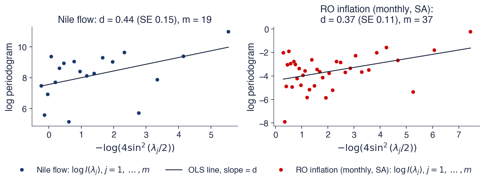
Dots: log periodogram at the \(m\) lowest Fourier frequencies; line: OLS fit. Nile: \(T = 100\) years; Romanian monthly inflation (SA): \(T = 260\) months, August 2026 the last
For the Nile, \(\hat d = 0.44\) with standard error 0.15, from \(m = 19\) frequencies, which correspond to cycles longer than 5.3 years. The local Whittle estimator of the next frame gives 0.40 with standard error 0.11. Both estimates are significantly above zero, about three standard errors away from it, and both point estimates are below 0.5, in the stationary range; with these standard errors, however, a value of 0.5 lies inside both 95% intervals.
For Romanian inflation, GPH gives \(\hat d = 0.37\) (standard error 0.11) and local Whittle 0.31 (standard error 0.08). The frequencies used correspond to cycles longer than 7.0 months, so the estimate describes the behaviour of inflation over horizons of many months and years. A \(d\) of about 0.3 means that a shock to monthly inflation fades over years rather than months.
The clouds of points in the chart are wide. Each periodogram ordinate is roughly an exponential variable around \(f(\lambda_j)\), so its logarithm has a large and skewed error. The slope is reliable only because many points are used, which is why the standard errors are large for short series such as the Nile.
In brief
Nile: \(\hat d = 0.44\) (SE 0.15), \(m = 19\) frequencies, i.e. cycles longer than 5.3 years
local Whittle (next slide): 0.40 (SE 0.11); both significantly above 0, inside the stationary range
Romanian inflation: \(\hat d = 0.37\) (SE 0.11); local Whittle 0.31 (SE 0.08)
cycles longer than 7.0 months: a shock to monthly inflation fades over years, not months
The cloud is wide: each periodogram ordinate is roughly an exponential variable around \(f(\lambda_j)\); the slope needs many points
The local Whittle (LW) estimator of Robinson (1995) uses the same \(m\) periodogram ordinates as GPH but replaces the regression by a likelihood. It assumes \(f(\lambda) \approx G\lambda^{-2d}\) for \(\lambda_1, \dots, \lambda_m\) and maximises the Gaussian, or Whittle, likelihood of these ordinates. After the constant \(G\) is concentrated out, the estimate solves
The first term is small when \(\lambda_j^{2d}I(\lambda_j)\) is roughly constant, that is, when \(d\) makes the periodogram flat after the correction \(\lambda_j^{2d}\); the second term prevents the trivial solution.
The standard error of local Whittle is \(1/(2\sqrt m)\), smaller than that of GPH, \(\pi/\sqrt{24m} \approx 0.64/\sqrt m\): for the same bandwidth, local Whittle is more precise. Velasco (1999) extended the method to non-stationary series: the estimator remains consistent for \(d\) up to 1, and its usual standard error remains valid for \(d\) below 3/4. It can therefore be applied directly to series such as unemployment, whose \(d\) may exceed 0.5.
Both GPH and local Whittle depend on the bandwidth \(m\). There is no universally correct choice, so the estimate should always be reported for several bandwidths, as the next chart does.
assume \(f(\lambda) \approx G\lambda^{-2d}\) for \(\lambda_1, \dots, \lambda_m\) and maximise the Gaussian (Whittle) likelihood of these ordinates
after concentrating out the constant \(G\) of \(f(\lambda) \approx G\lambda^{-2d}\): \(\hat d = \arg\min_d\ \log\Bigl(\frac1m\sum_{j=1}^m \lambda_j^{2d}I(\lambda_j)\Bigr) - \frac{2d}{m}\sum_{j=1}^m\log\lambda_j\)
Standard error \(1/(2\sqrt m)\), smaller than GPH (\(\pi/\sqrt{24m} \approx 0.64/\sqrt m\))
valid also for non-stationary series with \(d\) up to about 1 Velasco (1999)
Both GPH and local Whittle depend on \(m\): always report \(\hat d\) for several bandwidths
The chart shows how the estimates of \(d\) change with the bandwidth. The horizontal axis is the exponent \(a\) in \(m = \lfloor T^a \rfloor\), from 0.40 to 0.80. The solid line is local Whittle, with its 95% interval shaded; the dashed line is GPH; and the dotted horizontal line marks \(d = 0.5\), the boundary of stationarity.
The left panel is Romanian monthly inflation, with \(T = 260\), so \(m\) runs from 9 to 85 frequencies. The right panel is US monthly inflation, with \(T = 954\) and correspondingly more frequencies. Moving to the right means using more frequencies: a narrower interval, but more risk of contamination by the short-run dynamics.
In brief
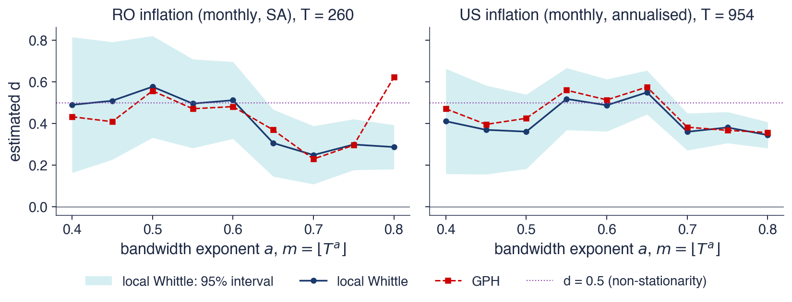
\(\hat d\) for \(m = \lfloor T^a\rfloor\), \(a = 0.40, \dots, 0.80\); shaded: 95% interval of local Whittle. Romanian monthly inflation (\(T = 260\), \(m\) from 9 to 85) and US monthly inflation (\(T = 954\))
For Romania, local Whittle ranges between 0.25 and 0.58 and GPH between 0.23 and 0.62 across the bandwidths. With few frequencies the estimates are near 0.5; with more they fall to about 0.3. The 95% interval is wide at small bandwidths and narrows as \(m\) grows, but the point estimate moves by more than the width of the interval would suggest is harmless. The answer depends on the choice of \(m\).
For the United States, local Whittle ranges between 0.34 and 0.55 and is always well above zero. The long sample, 1947–2026, gives narrower intervals. Several estimates are close to or above 0.5, the boundary of stationarity; as Section 7 shows, such high values can reflect changes of regime in US inflation over eight decades.
The conclusion is that inflation has long memory in both countries: no bandwidth gives an estimate near zero. But a single number for \(d\) hides an uncertainty of about \(\pm 0.15\) due to the bandwidth alone, on top of the sampling error reported by the standard errors.
In brief
Romania: local Whittle between 0.25 and 0.58, GPH between 0.23 and 0.62
with few frequencies the estimate is near 0.5; with more it falls to about 0.3: the answer depends on the choice of \(m\)
United States: local Whittle between 0.34 and 0.55, always well above 0
the long sample (1947–2026) gives narrow intervals; the level of \(d\) near 0.5 hints at regime changes (Section 7)
Conclusion: inflation has long memory in both countries; a single number for \(d\) hides an uncertainty of about \(\pm 0.15\)
The exact maximum likelihood estimator of Sowell (1992) treats the observations \(x = (x_1, \dots, x_T)'\) as a Gaussian vector with covariance matrix \(\Gamma(\vartheta)\), where \(\vartheta = (d, \phi, \theta, \sigma^2)\) collects all parameters. The log-likelihood is
where \(\mu\) is the vector of means and \(\Gamma(\vartheta)\) is the \(T \times T\) matrix whose entries are the ARFIMA autocovariances \(\gamma(|s-t|)\). The Durbin–Levinson recursion evaluates \(\ell\) without inverting the matrix directly, in \(O(T^2)\) operations.
The Whittle approximation of Fox and Taqqu (1986) works in the frequency domain. It replaces the likelihood by \(-\frac12\sum_j\bigl[\log f(\lambda_j;\vartheta) + I(\lambda_j)/f(\lambda_j;\vartheta)\bigr]\), summed over all Fourier frequencies, where \(f(\lambda_j;\vartheta)\) is the spectral density implied by the parameters. With the fast Fourier transform (FFT) it requires only \(O(T\log T)\) operations, and in large samples it is close to exact ML. Unlike local Whittle, it uses all frequencies and therefore needs a model for the whole spectrum.
Parametric estimators are efficient: for ARFIMA\((0,d,0)\) the standard error is about \(\sqrt{6}/(\pi\sqrt T)\), much smaller than the semiparametric standard errors, which depend on \(m\) rather than \(T\). The condition is that the ARMA orders are right. In practice \(p\) and \(q\) are chosen by AIC or BIC, comparing several ARFIMA\((p,d,q)\) models, as for the ARMA models of Chapter 2.
In brief
Exact MLSowell (1992): for Gaussian \(x = (x_1, \dots, x_T)'\) with covariance matrix \(\Gamma(\vartheta)\), \(\vartheta = (d, \phi, \theta, \sigma^2)\):
\(\ell\): the log-likelihood; \(\mu\): the vector of means; \(\Gamma(\vartheta)\): the \(T \times T\) matrix of the ARFIMA autocovariances
\(\Gamma\) comes from the ARFIMA autocovariances; the Durbin–Levinson recursion evaluates \(\ell\) in \(O(T^2)\) operations
Whittle (approximate) ML Fox and Taqqu (1986): replace the likelihood by \(-\frac12\sum_j\bigl[\log f(\lambda_j;\vartheta) + I(\lambda_j)/f(\lambda_j;\vartheta)\bigr]\) over all Fourier frequencies
\(f(\lambda_j;\vartheta)\): the spectral density implied by the parameters \(\vartheta\)
fast (\(O(T\log T)\) with the FFT, the fast Fourier transform), close to exact ML in large samples
Parametric estimators are efficient (SE about \(\sqrt{6}/(\pi\sqrt T)\) for ARFIMA\((0,d,0)\)) only if the ARMA orders are right; choose \(p\), \(q\) by AIC/BIC
The simulation compares the five estimators under three designs, with 300 samples of \(T = 500\) observations each. The first design is white noise (\(d = 0\)), the second ARFIMA\((0,0.3,0)\)(\(d = 0.3\)), the third an AR(1) with \(\phi = 0.6\), which has short memory and therefore \(d = 0\). GPH and local Whittle use \(m = \lfloor T^{0.65} \rfloor\); the Whittle ML estimator fits an ARFIMA\((0,d,0)\) model; R/S and DFA are converted to the \(d\) scale with \(d = H - 1/2\).
Each box shows the distribution of the 300 estimates: the middle line is the median, the box covers the middle half of the estimates and the whiskers their spread. The dashed line is the true \(d\). A box centred on the dashed line indicates an unbiased estimator; a short box, a precise one.
In brief
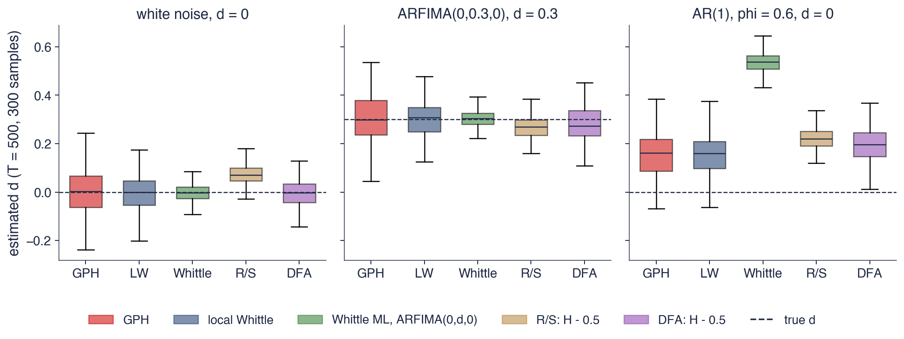
300 samples of \(T = 500\) per design; GPH and local Whittle with \(m = \lfloor T^{0.65}\rfloor\); Whittle ML of ARFIMA\((0,d,0)\); R/S and DFA converted with \(d = H - 1/2\)
When the model is correct, the parametric estimator wins clearly. Under ARFIMA\((0,0.3,0)\), the standard deviation of the Whittle ML estimates is 0.04, against 0.08 for local Whittle and 0.10 for GPH. Under white noise, R/S is biased upwards, with a mean estimate of 0.07 instead of 0, as Mandelbrot and Wallis (1969) had found.
The third design shows the other side. For an AR(1) with \(\phi = 0.6\) and no long memory, the Whittle ML estimate of an ARFIMA\((0,d,0)\) model averages 0.54, while GPH and local Whittle average 0.15. The misspecified parametric model has only \(d\) to describe the strong first-order dependence of the AR(1), so it turns short memory into "long memory". The semiparametric estimators suffer less, because they look only at the lowest frequencies, but they are not immune: with \(m = \lfloor T^{0.65} \rfloor\) the AR(1) part of the spectrum still affects the frequencies they use.
The practical rule follows. Always fit ARFIMA\((p,d,q)\) models with \(p, q \ge 1\) as alternatives to ARFIMA\((0,d,0)\), so that the short-run dependence has its own parameters, and check the semiparametric estimates for several bandwidths.
In brief
Correct model: Whittle ML is the most precise (SD 0.04 against 0.08 for local Whittle and 0.10 for GPH at \(d = 0.3\))
The table compares six models for Romanian monthly HICP inflation, seasonally adjusted, \(T = 260\) months from 2005 to 2026, all estimated by exact maximum likelihood. For each model it gives the estimate of \(d\) (zero for ARMA models), the AR and MA coefficients, the maximised log-likelihood \(\ell\), and the information criteria AIC and BIC; the smallest values of the criteria are in bold.
ARFIMA\((0,d,0)\) has the smallest AIC, 275.8, and the smallest BIC, 282.9, with a single memory parameter \(\hat d = 0.31\) (standard error 0.047). Adding an AR or an MA term barely changes the log-likelihood, from \(-135.9\) to \(-135.6\) or \(-135.5\), and \(\hat d\) falls only to 0.27, so the extra parameters are not worth their penalty. The memory of Romanian inflation is described by \(d\), not by short-run dynamics.
The best ARMA model, ARMA(1,1), has a log-likelihood of \(-138.0\), an AIC of 282.1 and a BIC of 292.8. Its estimates are revealing: \(\hat\phi = 0.92\), close to 1, and \(\hat\theta = -0.71\), an MA term that nearly cancels the AR root. This is the usual way in which an ARMA model imitates long memory: a root near the unit circle produces the slow decay, and the MA term pulls the first autocorrelations down to their observed level.
In brief
Model (exact ML)
\(\hat d\)
AR / MA
\(\ell\)
AIC
BIC
ARMA(1,1)
0
0.92 / \(-\)0.71
\(-\)138.0
282.1
292.8
ARMA(2,0)
0
0.39, …
\(-\)139.9
285.9
296.6
ARFIMA(0,\(d\),0)
0.31
–
\(-\)135.9
275.8
282.9
ARFIMA(1,\(d\),0)
0.27
0.07 / –
\(-\)135.6
277.1
287.8
ARFIMA(0,\(d\),1)
0.27
– / 0.08
\(-\)135.5
277.1
287.8
ARFIMA(1,\(d\),1)
0.27
\(-\)0.03 / 0.10
\(-\)135.5
279.1
293.3
Romanian monthly HICP inflation, seasonally adjusted, \(T = 260\) months (2005–2026); \(\ell\): maximised log-likelihood; bold: the smallest criterion
ARFIMA\((0,d,0)\) wins with one parameter: \(\hat d = 0.31\) (SE 0.047); adding \(\phi\) or \(\theta\) barely changes \(\ell\)
The best ARMA needs \(\phi = 0.92\) close to 1 and a cancelling MA term to imitate the slow decay
The chart compares the sample ACF of Romanian monthly inflation, the bars, with the autocorrelations implied by the two competing models estimated by exact ML: ARFIMA\((0,d,0)\) with \(d = 0.31\), the solid line, and ARMA(1,1) with \(\phi = 0.92\) and \(\theta = -0.71\), the dashed line. The shaded band is the 95% band for white noise, and the lags run up to 36 months.
The two model curves are close over the first year and separate afterwards: the ARFIMA curve flattens, while the ARMA curve continues to decline exponentially.
In brief
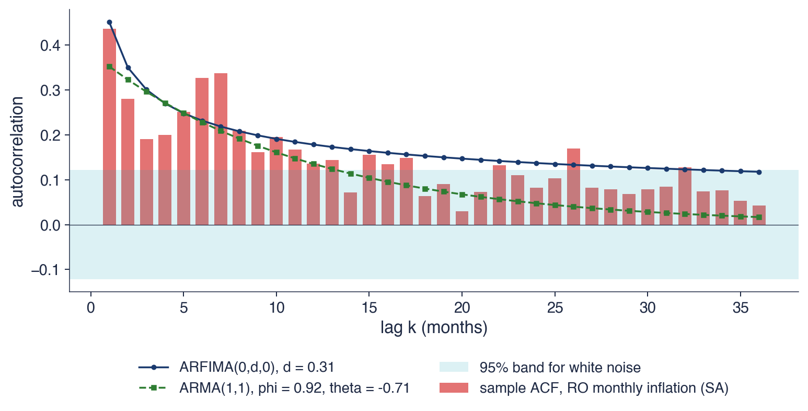
Bars: sample ACF; lines: the ACF implied by ARFIMA\((0,d,0)\) and by ARMA(1,1), both estimated by exact ML
At lag 12 the sample autocorrelation is 0.14, the ARFIMA model implies 0.18 and the ARMA(1,1) 0.14. At lag 24 the three values are 0.08, 0.14 and 0.05. The two models agree on the first year and disagree on the second, which means that their forecasts will agree at short horizons and differ at long ones. The sample ACF lies between the two curves at lag 24, and its tail stays positive beyond lag 30, closer in shape to the ARFIMA curve; part of the gap is the downward bias of the sample ACF of persistent series.
The ARFIMA curve matches the slow tail with one parameter, whereas the ARMA curve goes to zero exponentially and needs two parameters to fit the first lags. This is the visual counterpart of the likelihood comparison in the previous table.
Seasonal adjustment matters for these estimates. A seasonal pattern in monthly inflation produces peaks in the spectrum at the seasonal frequencies, the first of them at a cycle of 12 months, which is among the low frequencies used by GPH and local Whittle; the seasonal power would then be read as long memory. Removing the monthly means, as in Chapter 4, avoids this distortion of \(\hat d\).
In brief
At lag 12: sample 0.14, ARFIMA 0.18, ARMA(1,1) 0.14; at lag 24: 0.08, 0.14 and 0.05
the two models agree on the first year and disagree on the second: their long-horizon forecasts will differ
The ARFIMA curve matches the slow tail with one parameter; the ARMA curve goes to zero exponentially
Seasonal adjustment matters: a seasonal peak near the lowest frequencies would distort \(\hat d\) (Chapter 4)
The table applies the four estimators that do not require a full model, all except maximum likelihood, to twelve series. For each it gives the length \(T\), the Hurst exponents from R/S and DFA, and the estimates of \(d\) from GPH and local Whittle (LW), the latter with its standard error. All semiparametric estimates use \(m = \lfloor T^{0.65} \rfloor\). The data come from statsmodels (the Nile), Eurostat (Romanian inflation), FRED (US inflation and unemployment), EODHD (EOD Historical Data, a market-data provider, for the stock indices) and the BNR (the National Bank of Romania, for the EUR/RON rate). Returns are daily from 2000, and from 2005 for EUR/RON.
To compare the columns, recall that R/S and DFA report \(H\), so the corresponding \(d\) is \(H - 1/2\), and that a local Whittle estimate is significantly different from zero at 5% when it is more than about two standard errors away from it. The rows come in pairs that differ in one respect: two measures of Romanian inflation, two samples of US inflation, and returns against absolute returns for three markets.
In brief
Series
\(T\)
\(H_{R/S}\)
\(H_{DFA}\)
\(d_{GPH}\)
\(d_{LW}\) (SE)
Nile
100
0.83
0.64
0.44
0.40 (0.11)
RO inflation, monthly SA
260
0.75
0.84
0.37
0.31 (0.08)
RO inflation, 12-month
260
0.96
1.38
1.14
1.00 (0.08)
US inflation, monthly
954
0.83
0.87
0.57
0.55 (0.05)
US inflation, 1985–2019
420
0.69
0.59
0.07
0.10 (0.07)
US unemployment
944
0.97
1.27
0.82
0.91 (0.05)
S&P 500, \(r_t\)
6 714
0.53
0.49
0.02
\(-\)0.01 (0.03)
S&P 500, \(|r_t|\)
6 714
0.86
0.95
0.56
0.53 (0.03)
BET, \(r_t\)
6 670
0.58
0.57
0.16
0.12 (0.03)
BET, \(|r_t|\)
6 670
0.79
0.85
0.40
0.39 (0.03)
EUR/RON, \(r_t\)
5 352
0.53
0.52
\(-\)0.01
\(-\)0.01 (0.03)
EUR/RON, \(|r_t|\)
5 352
0.82
0.85
0.38
0.39 (0.03)
\(m = \lfloor T^{0.65}\rfloor\); LW: local Whittle; data: statsmodels, Eurostat, FRED, EODHD, BNR; returns daily since 2000 (EUR/RON since 2005)
For returns, \(d\) is essentially zero: local Whittle gives \(-0.01\) for both the S&P 500 and EUR/RON, well within one standard error (0.03) of zero. The BET is the exception, with a small but positive \(d = 0.12\), about four standard errors above zero, in line with the slower adjustment of prices on a less liquid market. For absolute returns, the estimates are 0.53 for the S&P 500, 0.39 for the BET and 0.39 for EUR/RON: in all three markets the size of the returns has long memory even though their sign does not, the subject of Section 6.
Romanian inflation shows how much the choice of series matters. Measured as a 12-month rate, \(\hat d \approx 1.00\); measured as a monthly rate, 0.31. The 12-month rate is approximately the sum of the last 12 monthly rates, so consecutive observations share 11 of their 12 components. This overlapping sum acts as a filter that multiplies the spectrum near frequency zero and suppresses it at the cycle of 12 months and its multiples. Among the frequencies used by the estimator, the lowest are therefore boosted and the higher ones damped, which steepens the log periodogram and pushes \(\hat d\) towards 1. The monthly rate is the series to model.
For US unemployment, local Whittle gives 0.91 with standard error 0.05. The point estimate is above 0.5, so the series is non-stationary, and below 1, which would imply mean reversion; however, the 95% interval, from about 0.80 to 1.01, still contains 1, so these data do not separate the series from a unit root at 5%. For US inflation, the estimate is 0.10 on 1985–2019 against 0.55 on the full sample 1947–2026: a calm subperiod has almost no memory, which anticipates the discussion of regimes in Section 7.
In brief
Returns: \(d \approx 0\) for the S&P 500 (\(-\)0.01) and EUR/RON (\(-\)0.01); small but positive for the BET (0.12)
absolute returns: 0.53, 0.39 and 0.39: long memory in volatility (Section 6)
Romanian 12-month inflation: \(d \approx\) 1.00, against 0.31 for the monthly rate: the 12-month rate sums 12 overlapping monthly changes
the overlap kills the spectrum at the frequencies used by the estimator and pushes \(\hat d\) towards 1; model the monthly rate
US unemployment: \(d \approx\) 0.91: non-stationary but mean-reverting; US inflation 1985–2019: 0.10, against 0.55 on 1947–2026
R/S and DFA measure the slope of a log–log plot; they are graphical and biased in small samples. GPH and local Whittle use the \(m\) lowest frequencies through a regression or a likelihood, and should be reported for several bandwidths. Exact ML and the Whittle estimator are efficient if the ARMA part is right, but short memory can masquerade as \(d\) when it is not. For Romanian monthly inflation, ARFIMA\((0,d,0)\) with \(\hat d = 0.31\) beats the ARMA models by both AIC and BIC.
In brief
R/S and DFA: slopes of log–log plots, graphical, biased in small samples
GPH and local Whittle: regressions or likelihoods on the \(m\) lowest frequencies; report several \(m\)
Exact ML and Whittle: efficient if the ARMA part is right; short memory can masquerade as \(d\)
Romanian monthly inflation: ARFIMA\((0,d,0)\) with \(\hat d = 0.31\) beats ARMA by AIC and BIC
Section summary
The memory parameter is estimated less precisely than ARMA coefficients, because the information about it lies in the few slowest cycles of the sample. The semiparametric estimators are robust to the short-run dynamics but imprecise and sensitive to the bandwidth; the parametric ones are precise but can turn a misspecified short memory into a large \(\hat d\). Used together, they show long memory in inflation and in the absolute returns of all three markets, none in the returns of the S&P 500 and EUR/RON, and estimates near 1 for the overlapping 12-month inflation rate and for US unemployment.
Forecasting with ARFIMA
The main practical use of a memory parameter is forecasting. This section derives ARFIMA forecasts from the AR(\(\infty\)) representation of the model, produces forecasts of US inflation three years ahead, and asks whether long memory improves forecast accuracy out of sample for Romanian and US inflation.
An invertible ARFIMA model can be written as an autoregression of infinite order, \(\pi(L)(x_t - \mu) = \varepsilon_t\), with \(\pi(L) = \phi(L)(1-L)^d/\theta(L) = \sum_k\pi_kL^k\). For ARFIMA\((0,d,0)\) the weights \(\pi_k\) are simply those of \((1-L)^d\) from (8.2). Writing \(\hat x_{T+h}\) for the forecast made at time \(T\) for time \(T + h\), the one-step forecast is
and forecasts \(h\) steps ahead follow from the same recursion, with earlier forecasts in place of the values not yet observed. The sum is truncated at the first observation, since nothing earlier is available.
For ARFIMA\((0,0.4,0)\) the weights are \(-\pi_k = 0.4,\ 0.12,\ 0.064,\ 0.042, \dots\), so
The whole history counts. An AR(1) forecast uses only the last observation \(x_T\); after a long period above the mean, the ARFIMA forecast stays higher for longer, because every one of those past observations still pushes it up.
ARFIMA forecasts revert to the mean \(\mu\) hyperbolically, not exponentially. The forecast error variance at horizon \(h\) is \(\sigma^2\sum_{j<h}\psi_j^2\), where \(\psi_j\) are the MA(\(\infty\)) weights of (8.3); it grows slowly towards the variance of the series, \(\gamma(0)\).Ray (1993) studied this long-range forecasting property and how well simpler models approximate it.
In brief
An invertible ARFIMA can be written as \(\pi(L)(x_t - \mu) = \varepsilon_t\), with \(\pi(L) = \phi(L)(1-L)^d/\theta(L) = \sum_k\pi_kL^k\)
\(\pi_k\): the AR(\(\infty\)) weights (for ARFIMA\((0,d,0)\), the weights of \((1-L)^d\)); \(\hat x_{T+h}\): the forecast made at \(T\) for \(T + h\)
one step: \(\hat x_{T+1} = \mu - \sum_{k=1}^{T}\pi_k(x_{T+1-k} - \mu)\); \(h\) steps: the same recursion, with forecasts in place of unknown values
Example, ARFIMA\((0,0.4,0)\): \(-\pi_k = 0.4,\ 0.12,\ 0.064,\ 0.042, \dots\)
an AR(1) uses only \(x_T\); after a long period above the mean the ARFIMA forecast stays higher, for longer
Forecasts revert to \(\mu\) hyperbolically; the forecast error variance \(\sigma^2\sum_{j<h}\psi_j^2\) (\(\psi_j\): the MA(\(\infty\)) weights) grows slowly towards \(\gamma(0)\)Ray (1993)
The chart shows US monthly CPI inflation, annualised, from 2019 to August 2026, the last of \(T = 954\) months, followed by forecasts 36 months ahead from two models. The first is an ARFIMA\((1,d,0)\) estimated by the Whittle method; the second an AR(\(p\)) with the order \(p\) chosen by AIC. The dashed horizontal line is the sample mean since 1947, 3.45%.
The observed series shows the inflation surge of 2021–2022, with monthly annualised rates above 10%, and large month-to-month swings throughout. Both forecast paths start near the recent level and settle close to the long-run mean within a few months.
In brief
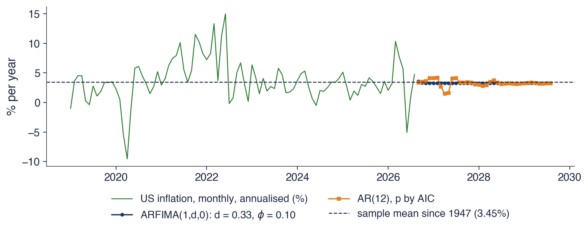
US monthly CPI inflation, annualised, \(T = 954\) months up to August 2026; ARFIMA(1,\(d\),0) estimated by Whittle; AR(\(p\)) with \(p\) by AIC; 36 months ahead
The ARFIMA model has \(\hat d = 0.33\) and \(\hat\phi = 0.10\). AIC selects an AR with \(p = 12\) lags, the largest order allowed. The AR model needs a year of lags to imitate what \(d\) does with a single parameter, a sign that the data have more memory than a short autoregression can capture.
Over the last 12 months, inflation averaged 3.65%. The ARFIMA forecast is 3.62% for next month, 3.28% in a year and 3.29% in three years; the AR forecast is 3.59%, 3.38% and 3.26% at the same horizons. Both approach the long-run mean of 3.45%, and the two paths differ little, because an AR(12) already carries a long memory of its own. The short-term wiggles of the AR path come from its many lags, which project past monthly swings forward.
Both models assume that the long-run mean of 1947–2026 is the level to which inflation returns. Whether this anchor is right today is a question about regimes, not about \(d\): if the mean itself has changed, a model with any memory parameter will revert to the wrong level.
In brief
ARFIMA: \(\hat d = 0.33\), \(\hat\phi = 0.10\); AR: \(p = 12\) lags, the largest allowed
the AR needs a year of lags to imitate what \(d\) does with one parameter
Last 12 months average 3.65%; the forecasts: 3.62% and 3.59% next month, 3.28% and 3.38% in a year, 3.29% and 3.26% in three years
both approach the long-run mean 3.45%; the paths differ little because the AR(12) already carries a long memory
Whether the long-run mean of 1947–2026 is the right anchor today is a question about regimes, not about \(d\)
The chart reports a pseudo out-of-sample forecast comparison with an expanding window. At each forecast origin the models are estimated only on the data available up to that date, forecasts are made for horizons of 1 to 24 months, and the forecast errors are recorded once the outcomes are known. For Romania there are 128 origins, from January 2014 to August 2024, and the seasonal adjustment is redone within each window so that no future information enters; for the United States there are 415 origins, from January 1990 to July 2024.
The vertical axis is the root mean squared error (RMSE) of each method divided by the RMSE of the AR(\(p\)) benchmark with \(p\) chosen by AIC, so the benchmark is the horizontal line at 1 and values below 1 mean better forecasts. The competitors are ARFIMA\((1,d,0)\), the sample mean and the random walk, whose forecast is the last observed value.
In brief
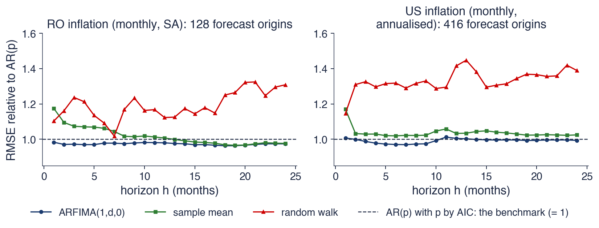
Pseudo out-of-sample, expanding window: Romania 128 origins (January 2014–August 2024), seasonal adjustment inside each window; United States 415 origins (January 1990–July 2024). RMSE relative to AR(\(p\)); below 1: better
For Romania, ARFIMA beats the AR benchmark at every horizon, with RMSE ratios between 0.963 and 0.983: 0.983 at 1 month, 0.980 at 12 months and 0.974 at 24 months, so gains of about 2 to 4%. At 12 months the RMSE is 0.53 percentage points per month for ARFIMA, 0.54 for the AR, 0.54 for the sample mean and 0.61 for the random walk.
For the United States, the ratios lie between 0.97 and 1.01 across the horizons: practically a tie with a rich AR(\(p\)), which here always has 12 lags. The random walk is far worse at all horizons beyond one month, with ratios mostly between 1.3 and 1.45: a forecast that ignores mean reversion is costly.
Long memory therefore gives modest, steady gains where the AR benchmark is short, and little where the benchmark is already long. The largest forecast errors in both countries come from regime changes, such as 2008 and 2021–2022, that no linear model foresees. Whether gains of 2–4% are significant is a question for the Diebold–Mariano test of Chapter 4.
In brief
Romania: ARFIMA beats the AR at every horizon, by 2–4% (ratio 0.983 at 1 month, 0.980 at 12, 0.974 at 24)
RMSE at 12 months: ARFIMA 0.53, AR 0.54, mean 0.54, random walk 0.61 (pp per month)
United States: ratios between 0.970 and 1.005: practically a tie with a rich AR(\(p\))
the random walk is far worse at all horizons beyond one month
Long memory gives modest, steady gains; the large errors come from regime changes (2008, 2021–2022) that no linear model foresees; test the gains with Diebold–Mariano (Chapter 4)
ARFIMA forecasts come from the AR(\(\infty\)) weights \(\pi_k\), so the whole history of the series counts. They return to the mean hyperbolically, and the forecast uncertainty grows slowly with the horizon. For inflation, ARFIMA gives small gains over an AR model in Romania and a tie in the United States.
In brief
Forecasts from the AR(\(\infty\)) weights \(\pi_k\): the whole history counts
Hyperbolic return to the mean; slowly growing forecast uncertainty
Inflation: small gains over AR in Romania, a tie in the United States
Section summary
An ARFIMA forecast is a long weighted average of past deviations from the mean, with weights that decay like a power of the lag. Out of sample, this gives Romanian inflation forecasts 2–4% more accurate than an autoregression chosen by AIC, while for US inflation an AR(12) does as well. The large errors in both countries come from shifts in regime, a theme that returns in Section 7.
Long memory in volatility
Chapter 5 showed that the size of returns is predictable while their sign is not. This section shows that the predictability of size extends over very long horizons: absolute returns and realised volatility have long memory, while returns themselves have none. It then presents two models that build this property into volatility forecasting, FIGARCH and HAR.
Ding, Granger and Engle (1993) studied daily S&P 500 returns from 1928 to 1991. The returns themselves are almost uncorrelated, but powers of their absolute values, \(|r_t|^\delta\) with \(\delta > 0\), are positively autocorrelated for thousands of lags. The autocorrelation is strongest for \(\delta \approx 1\), that is, for absolute returns rather than squared returns. They called this the "long memory property" of stock market returns: the memory lives in the size of the returns, not in their sign.
The finding exposed a limitation of the GARCH(1,1) model of Chapter 5. In that model the autocorrelations of \(r_t^2\) fall like \((\alpha + \beta)^k\), where \(\alpha\) and \(\beta\) are the ARCH and GARCH parameters, that is, exponentially. Even with \(\alpha + \beta\) close to 1, an exponential decay eventually falls far below a hyperbolic one.
The response came in two forms. Baillie, Bollerslev and Mikkelsen (1996) applied fractional differencing to GARCH and obtained the FIGARCH model. With high-frequency data, Andersen et al. (2003) measured volatility directly as realised volatility and modelled it with ARFIMA, and Corsi (2009) proposed the simpler HAR model. Robert Engle, shown in the photograph, shared the 2003 Nobel Prize in economics with Clive Granger.
returns are almost uncorrelated, but \(|r_t|^\delta\) is autocorrelated for thousands of lags
\(\delta > 0\): a power; the autocorrelation is strongest for \(\delta \approx 1\)
the “long memory property” of stock market returns: memory lives in the size, not in the sign
A GARCH(1,1) (Chapter 5) implies autocorrelations of \(r_t^2\) that fall like \((\alpha + \beta)^k\) (\(\alpha\), \(\beta\): the ARCH and GARCH parameters): exponentially
The chart shows, for daily log returns of the S&P 500 (\(T = 6714\)) and of the BET (\(T = 6670\)) from 2000 to 2026, three autocorrelation functions up to lag 250, about one trading year: those of the returns \(r_t\), of the absolute returns \(|r_t|\) and of the squared returns \(r_t^2\). The shaded band \(\pm 1.96/\sqrt T\) is the 95% band for an i.i.d. series; with more than 6000 observations it is very narrow, about \(\pm 0.024\).
The returns stay inside or close to the band, apart from the first lag. The absolute and squared returns start well above it and decline slowly; the absolute returns stay above the squared returns at almost every lag.
In brief
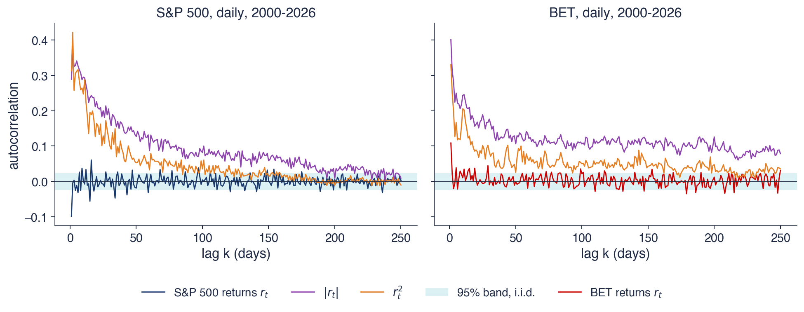
Daily log returns of the S&P 500 (\(T = 6\,714\)) and of the BET (\(T = 6\,670\)), 2000–2026; ACF up to lag 250 (one trading year); shaded: \(\pm 1.96/\sqrt T\)
For the S&P 500, the absolute returns have \(\hat\rho = 0.29\) at lag 1 and still 0.08 at lag 100, and 227 of the 250 autocorrelations lie above the band. For the BET the memory is even longer: 0.40 at lag 1, 0.08 at lag 250, and all 250 autocorrelations above the band. A day of large price moves raises the probability of large moves months later.
Absolute returns are more persistent than squared returns, as Ding, Granger and Engle (1993) found; for the S&P 500 only 128 of the 250 autocorrelations of \(r_t^2\) are above the band. Squares give enormous weight to a few crash days, which makes their sample autocorrelations noisy. The local Whittle estimates for \(|r_t|\) are 0.53 for the S&P 500 and 0.39 for the BET.
A shuffle test shows where the memory comes from. If the days are put in random order, the distribution of returns is unchanged, including its fat tails, but the order of calm and turbulent days is destroyed. After the shuffle, the local Whittle estimates for \(|r_t|\) fall to 0.00 and \(-0.02\). The memory is therefore in the timing of calm and turbulent days, not in the heavy tails of the distribution.
In brief
S&P 500: \(|r_t|\) has \(\hat\rho = 0.29\) at lag 1 and still 0.08 at lag 100; 227 of 250 lags above the band
BET: 0.40 at lag 1, 0.08 at lag 250, 250 of 250 above the band
\(|r_t|\) is more persistent than \(r_t^2\), as in Ding, Granger and Engle (1993); squares are dominated by a few crash days
local Whittle for \(|r_t|\): 0.53 (S&P 500), 0.39 (BET); after a random shuffle of the days: 0.00 and \(-\)0.02
The shuffle keeps the distribution and destroys the order: the memory is in the timing of calm and turbulent days, not in fat tails
The realised variance of month \(m\) is the sum of the squared daily returns within that month, \(RV_m = \sum_{t \in m} r_t^2\), and the realised volatility is its square root, \(\sqrt{RV_m}\). It measures the volatility of the month directly from the data, almost without a model. Andersen et al. (2003) developed the idea with intraday data: summing squared five-minute returns gives a daily realised volatility; here daily returns give a monthly one.
The chapter models the logarithm, \(\log\sqrt{RV_m}\), for two reasons. The distribution of log realised volatility is close to the Normal distribution, whereas realised volatility itself is skewed to the right; and the logarithm can take any real value, so a linear model for it cannot produce a negative volatility. Andersen et al. (2003) established the stylised fact that log realised volatility is well described by a long-memory model with \(d \approx 0.4\).
Realised volatility is a much more precise measure than a single absolute return. The absolute return of one day mixes the volatility of that day with the random size of the shock; within a month of about 21 trading days much of this noise averages out, so the long memory of volatility is easier to see and to estimate.
The chart shows the sample ACF of the log monthly realised volatility of the S&P 500 (left) and of the BET (right), 321 months from 2000 to 2026, together with the autocorrelations implied by two models estimated by exact ML: ARFIMA\((1,d,0)\), the solid line, and ARMA(1,1), the dashed line. The panel titles report the estimates of \(d\) from three methods: ML, local Whittle (LW) and GPH.
The two panels differ in an instructive way. For the BET, the sample ACF stays around 0.2 even at lag 36, and the ARFIMA curve follows it; for the S&P 500, the sample ACF falls close to zero after about 20 months and is matched better by the ARMA curve.
In brief
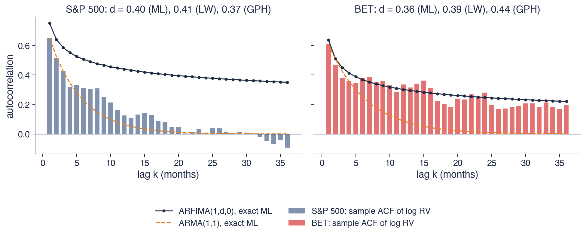
Log monthly realised volatility from daily returns, 321 months (2000–2026); lines: ACF of ARFIMA(1,\(d\),0) and ARMA(1,1), both by exact ML
The estimators agree on the order of magnitude of \(d\). For the S&P 500, ML gives 0.40, local Whittle 0.41 and GPH 0.37; for the BET, 0.36, 0.39 and 0.44. All six estimates lie between 0.36 and 0.44, close to the value of about 0.4 reported by Andersen et al. (2003).
The model comparison differs between the two markets. For the BET, ARFIMA fits the slow tail, with a sample autocorrelation of 0.28 at lag 24, and has a clearly smaller BIC, 343.9 against 355.4 for ARMA(1,1). For the S&P 500, the sample ACF dies out after about 20 months, and an ARMA(1,1) with \(\phi = 0.81\) fits about as well, with BIC 294.4 against 295.9 for ARFIMA. With 27 years of monthly data, long memory and a persistent ARMA are hard to tell apart.
The visual comparison must be read with care. The sample ACF of a long-memory series is biased downwards, because the sample mean absorbs part of the slow component, so a model curve above the bars is not necessarily wrong. The comparison between models should rely on the likelihood and on information criteria, not on the eye.
In brief
All estimators agree: \(d\) between 0.36 and 0.47 for both markets (ML 0.40 and 0.36)
BET: ARFIMA fits the slow tail (lag 24: sample 0.28) and wins on BIC (343.9 against 355.4 for ARMA(1,1))
S&P 500: the sample ACF dies out after about 20 months; ARMA(1,1) with \(\phi = 0.81\) fits as well (BIC 294.4 against 295.9)
with 27 years of data, long memory and a persistent ARMA are hard to tell apart
The sample ACF of a long-memory series is biased downwards (the sample mean absorbs part of the slow component): judge models by likelihood, not by eye
The FIGARCH\((1,d,1)\) model of Baillie, Bollerslev and Mikkelsen (1996) starts from the observation of Chapter 5 that GARCH(1,1) is an ARMA(1,1) for the squared shocks \(\varepsilon_t^2\), and applies the fractional difference to it. With \(\sigma_t^2\) the conditional variance, \(\varepsilon_t\) the return shock and \(\omega > 0\),\(\beta\) and \(\phi\) GARCH-type parameters, the model is
with \(\omega^* = \omega/(1 - \beta)\). The last line is the ARCH(\(\infty\)) form: today's variance is a weighted sum of all past squared shocks. In FIGARCH the weights \(\lambda_k\) decay like \(k^{-1-d}\), hyperbolically; with \(d = 0\) the model is GARCH and the weights decay exponentially, and with \(d = 1\) it is IGARCH.
The heterogeneous autoregressive (HAR) model of Corsi (2009) takes a simpler route. It regresses tomorrow's realised volatility on three averages of the past:
where \(\overline{RV}_{t-4:t}\) and \(\overline{RV}_{t-21:t}\) are the averages over the last 5 and 22 trading days (a week and a month), and \(\beta_d\),\(\beta_w\),\(\beta_m\) are their weights, estimated by OLS. The economic idea is that the market contains participants with daily, weekly and monthly horizons, each reacting to the volatility over its own horizon.
HAR is not a long-memory model: it is an AR(22) with constraints, and its autocorrelations eventually decay exponentially. But its three steps imitate a power law over the horizons that matter in practice, and it is estimated by simple OLS. Both models answer the same failure of GARCH from Chapter 5: in GARCH, volatility shocks die out too fast.
\(\omega^* = \omega/(1 - \beta)\); the ARCH(\(\infty\)) weights \(\lambda_k\) decay like \(k^{-1-d}\); \(d = 0\): GARCH, \(d = 1\): IGARCH
HAR (heterogeneous autoregressive model) Corsi (2009): \(RV_{t+1} = c + \beta_d RV_t + \beta_w \overline{RV}_{t-4:t} + \beta_m \overline{RV}_{t-21:t} + u_{t+1}\)
\(\overline{RV}_{t-4:t}\), \(\overline{RV}_{t-21:t}\): averages over the last 5 and 22 days (weekly, monthly); \(\beta_d\), \(\beta_w\), \(\beta_m\): their weights; estimated by OLS
the idea: market participants with daily, weekly and monthly horizons
not a long-memory model, but three steps that imitate a power law over the horizons that matter
Both answer the failure of GARCH from Chapter 5: volatility shocks die out too fast in GARCH
The left panel compares the ARCH(\(\infty\)) weights \(\lambda_k\) of GARCH(1,1) (dashed) and FIGARCH\((1,d,1)\) (solid), both estimated with Student-t errors on daily returns of the S&P 500 and the BET from 2000 to 2026 with the arch package. Both axes are logarithmic, so a hyperbolic decay is a straight line and an exponential decay bends down.
The right panel shows the HAR model estimated on the daily range-based volatility of the S&P 500, computed with the Parkinson estimator from the daily high and low prices. The bars are the implied weight of each lag, from 1 to 22 days; the line shows the weights \(-\pi_k\) of \((1-L)^d\) with the \(d\) estimated by local Whittle on the same series.
In brief
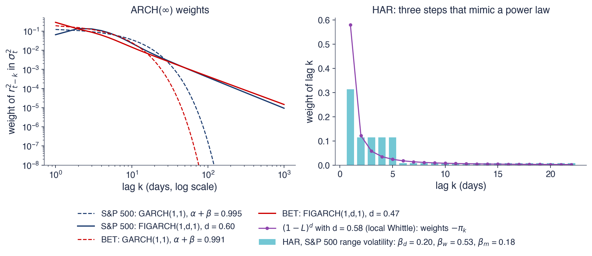
Left: ARCH(\(\infty\)) weights of GARCH(1,1) and FIGARCH(1,\(d\),1), Student \(t\) errors, daily returns 2000–2026 (arch)
Right: HAR for the daily range-based volatility of the S&P 500 (Parkinson estimator from high and low prices)
The FIGARCH estimates of \(d\) are 0.60 for the S&P 500 and 0.47 for the BET, and the BIC falls by 34 and by 71 relative to GARCH, so the data clearly prefer the long-memory model. The difference lies in the distant past. The weight of a shock 100 days ago in today's variance is \(1.6 \cdot 10^{-7}\) in GARCH and \(3.9 \cdot 10^{-4}\) in FIGARCH for the S&P 500, three orders of magnitude more.
GARCH reaches persistence by pushing \(\alpha + \beta\) close to 1: 0.995 for the S&P 500. The near-IGARCH estimates of Chapter 5 are therefore a symptom of long memory. A short-memory model asked to fit a slowly decaying dependence moves its persistence towards the unit-root boundary, just as the ARMA(1,1) for Romanian inflation pushed \(\phi\) to 0.92.
The HAR estimates are \(\hat\beta_d = 0.20\),\(\hat\beta_w = 0.53\) and \(\hat\beta_m = 0.18\), so the weekly component dominates. Spread over the individual lags, they give a weight of 0.31 at lag 1, 0.11 at each of lags 2–5 and 0.008 at each of lags 6–22. These steps have the same overall shape as the hyperbolic weights of \((1-L)^d\) with \(d = 0.58\), the local Whittle estimate: a large weight at lag 1, smaller weights over the first week and a long, thin tail. They are a coarse approximation, though: at lag 1 the fractional weight is 0.58, almost twice the HAR weight.
In brief
FIGARCH: \(\hat d = 0.60\) (S&P 500) and 0.47 (BET); BIC falls by 34 and 71 against GARCH
weight of a shock 100 days ago in today's variance: GARCH \(1.6 \cdot 10^{-7}\), FIGARCH \(3.9 \cdot 10^{-4}\) (S&P 500): three orders of magnitude more
GARCH reaches persistence by \(\alpha + \beta = 0.995\), near 1: the near-IGARCH result of Chapter 5 is a symptom of long memory
Returns have \(d \approx 0\), while absolute returns and realised volatility have \(d \approx 0.4\). The shuffle test shows that this memory lies in the order of the days, not in the distribution of returns. FIGARCH gives hyperbolically decaying ARCH(\(\infty\)) weights, and HAR approximates them with three averages estimated by OLS.
The shuffle test: memory in the order of the days, not in the distribution
FIGARCH: hyperbolic ARCH(\(\infty\)) weights; HAR: a simple OLS approximation
Section summary
Long memory in finance lives in volatility, not in returns. The absolute returns of the S&P 500 and the BET remain autocorrelated a year later, realised volatility has \(d\) around 0.4, and FIGARCH improves on GARCH by giving distant shocks hyperbolically decaying weights. The near-integrated GARCH estimates of Chapter 5 are a consequence of fitting an exponential model to this slow decay.
Spurious long memory
A positive estimate of \(d\) shows that the series has more low-frequency power than a short-memory model can explain. It does not show where that power comes from. This section shows that structural breaks and rare regime switches produce the same signature, measures the effect in a simulation, revisits the Nile and US inflation, and lists the checks that separate genuine from spurious long memory.
A level shift adds a slow, step-like component to a series. A step contains mostly very low frequencies, so the periodogram gains power near zero and the sample ACF decays slowly, because observations on the same side of the break are all shifted in the same direction. This is the same mechanism through which a series with a break can look like a unit root, as Perron showed and as discussed in Chapter 3.
Diebold and Inoue (2001) showed that a Markov-switching mean with rare switches is "observationally equivalent" to long memory: in a sample of length \(T\), the fewer the expected switches, the closer the series looks to an \(I(d)\) process. Regime-switching models are the subject of Chapter 10. Granger and Hyung (2004) found that occasional breaks explain much of the long memory of the absolute returns of the S&P 500.
The practical consequence is that a significant \(\hat d\) is consistent with two different data-generating processes, with different implications. With long memory, shocks fade slowly and forecasts revert to a fixed mean; with breaks, the series is short-memory around a mean that occasionally jumps, and forecasts should revert to the current regime's mean.
In brief
A level shift adds a slow, step-like component: low frequencies gain power and the sample ACF decays slowly
the same mechanism that makes a broken series look like a unit root (Perron, Chapter 3)
Diebold and Inoue (2001): a Markov-switching mean with rare switches is “observationally equivalent” to long memory
the fewer the switches in a sample of length \(T\), the closer the series looks to \(I(d)\)
regime-switching models are the topic of Chapter 10
Granger and Hyung (2004): occasional breaks explain much of the long memory of S&P 500 absolute returns
The simulation generates 200 samples of \(T = 1000\) observations whose true memory parameter is \(d = 0\), and estimates \(d\) with GPH and local Whittle. In the left panel each series is standard Normal noise, \(N(0,1)\), with one shift in the mean at \(T/2\); the horizontal axis gives the size of the shift in standard deviations of the noise. In the right panel each series is \(N(0,1)\) noise plus a mean that switches between 0 and 1 with probability \(p\) in each period; the horizontal axis gives \(p\) on a logarithmic scale.
Both panels plot the average estimate of \(d\) over the 200 samples. The dashed line at zero is the true value; any distance above it is spurious long memory.
In brief
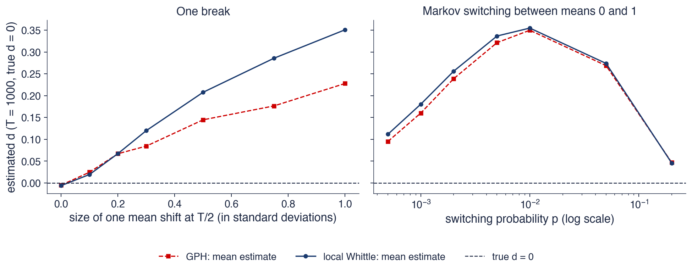
200 samples of \(T = 1000\), true \(d = 0\). Left: \(N(0,1)\) noise with one mean shift at \(T/2\); right: \(N(0,1)\) noise plus a mean that switches between 0 and 1 with probability \(p\) each period
A single shift in the mean of half a standard deviation already gives an average local Whittle estimate of \(\hat d = 0.21\), and a shift of one standard deviation gives 0.35. A shift of half a standard deviation is hard to see by eye in a noisy series of 1000 observations, yet the estimator reports moderate long memory. GPH reacts in the same direction, somewhat less strongly.
Regime switching gives a non-monotonic picture. With \(p = 0.01\), about 10 switches in a sample of 1000, the average estimate is \(\hat d = 0.35\), the highest in the chart. With \(p = 0.2\), which means frequent switches, it falls to 0.05. Rare regimes look like memory, because each regime lasts long enough to create a slow excursion; frequent switches average out into short memory, because the mean changes so often that it behaves like additional noise.
A significant estimate of \(d\) is therefore consistent both with long memory and with breaks or regimes. The estimate alone cannot decide between them: other evidence is needed, such as tests for breaks, estimates on subsamples and comparisons with regime-switching models.
In brief
One shift of half a standard deviation already gives \(\hat d = 0.21\) (local Whittle); a shift of one standard deviation gives 0.35
the break is hard to see by eye in noisy data, yet the estimator reports moderate long memory
Regime switching: with \(p = 0.01\) (about 10 switches) \(\hat d = 0.35\); with \(p = 0.2\) (frequent switches) \(\hat d = 0.05\)
rare regimes look like memory, frequent ones average out into short memory
A significant \(\hat d\) is consistent with long memory and with breaks: other evidence is needed to decide
The left panel shows the Nile flow from 1871 to 1970 with two horizontal lines: the mean before and the mean after 1898, the change point identified by Cobb (1978). The first Aswan dam was completed in 1902, a few years after the change point. The right panel is an R/S plot of the raw series and of the series after the two regime means have been subtracted, with a reference line of slope 0.5.
If the memory of the Nile is genuine, removing the two means should leave most of it in place. If it comes from the break, the corrected series should behave like a short-memory series, with an R/S slope close to 0.5.
In brief
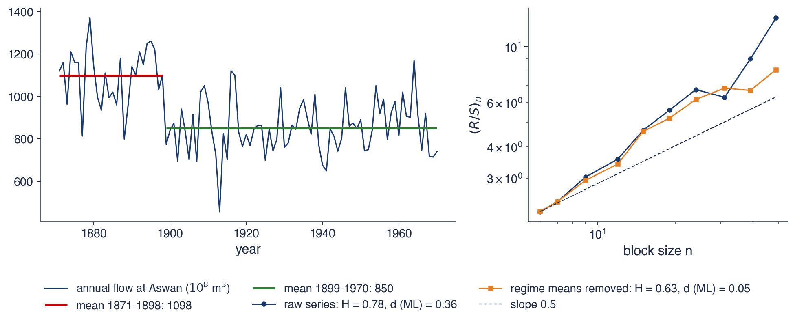
Left: the flow with the means before and after 1898, the change point of Cobb (1978) (the first Aswan dam was completed in 1902); right: R/S plot of the raw series and of the series with the two regime means removed
The mean flow falls from 1098 to 850 after 1898, a decrease of 23%. On the raw series, the exact ML estimate is \(\hat d = 0.36\) (standard error 0.07), local Whittle gives 0.40 and R/S gives \(H = 0.78\): by every measure, the series appears to have long memory.
After the two regime means are removed, the exact ML estimate is \(\hat d = 0.05\) (standard error 0.10), no longer distinguishable from zero, and local Whittle gives \(-0.17\). The first autocorrelation falls from 0.50 to 0.16. For these 100 years, one break explains almost all of the memory.
The conclusion is limited to this sample. Hurst's own evidence came from much longer records, including the Roda gauge in Cairo, which goes back to the 7th century, and a single change in 1898 cannot explain persistence measured over many centuries. The lesson is methodological: test for breaks before interpreting \(d\).
In brief
The mean falls from 1098 to 850 (\(-\)23%) after 1898
raw series: \(\hat d = 0.36\) (exact ML, SE 0.07), local Whittle 0.40, R/S \(H = 0.78\)
Regime means removed: \(\hat d = 0.05\) (SE 0.10), local Whittle \(-\)0.17; \(\hat\rho(1)\) falls from 0.50 to 0.16
for these 100 years one break explains almost all of the memory
Hurst's own evidence came from much longer records (the Roda gauge, from the 7th century); the lesson is to test for breaks before reading \(d\)
The chart asks whether memory is a constant property of a series. The top panel shows the local Whittle estimate of \(d\) for US monthly inflation, computed in rolling 20-year windows and dated at the end of each window, with the 95% band of \(\hat d\) for a series without memory shaded. The bottom panel shows the DFA exponent \(H\) of daily S&P 500 and BET returns in windows of 1000 trading days, moved forward by 21 days at a time.
The shaded bands are 95% Monte Carlo bands for i.i.d. series of the same length, built as recommended by Weron (2002): they show how far the estimate can move by chance alone when there is no memory. An estimate outside the band is evidence of memory, or of anti-persistence, in that window.
In brief
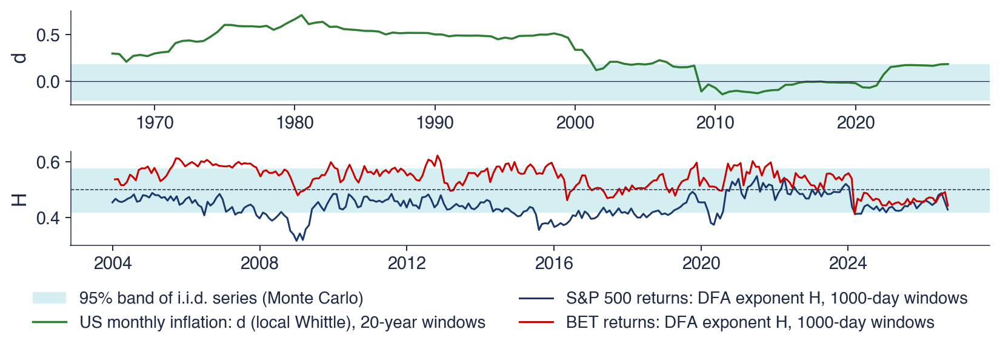
Top: local Whittle \(\hat d\) of US monthly inflation in rolling 20-year windows (dated at the window end)
Bottom: DFA exponent of daily S&P 500 and BET returns in 1000-day windows moved by 21 days; shaded: 95% Monte Carlo bands for i.i.d. series Weron (2002)
For US inflation, \(\hat d\) peaks at 0.71 in the window ending in July 1980, which covers the Great Inflation of the 1970s and the start of the Volcker disinflation, and falls to \(-0.14\) in the window ending in July 2010. In the windows ending between about 2009 and 2021, which cover two decades of low and stable inflation, the estimate lies inside the band of no memory, from \(-0.21\) to 0.18; the inflation surge of 2021–2022 brings it back to 0.18, the upper edge of the band.
For returns, the S&P 500 exponent stays mostly below 0.5, with a minimum of 0.32 in the window ending in December 2008, and in several periods it falls below the lower edge of the band, a sign of mild anti-persistence. The BET exceeds the upper edge of the band in 24% of the windows: a less liquid market shows some persistence in its returns, which fades in recent years.
The full-sample US estimate of 0.55 therefore mixes very different regimes. Memory that comes and goes with the monetary regime is a sign of breaks rather than of a constant \(d\), and a model with a single \(d\) for 1947–2026 describes no particular period well.
In brief
US inflation: \(\hat d\) peaks at 0.71 in the window ending July 1980 (the Great Inflation and the Volcker disinflation) and falls to \(-\)0.14 (July 2010)
in the calm years of inflation targeting \(d\) is inside the band of no memory [\(-\)0.21, 0.18]; the 2021–2022 surge brings it back to 0.18
Returns: the S&P 500 exponent stays mostly below 0.5 (minimum 0.32, December 2008); the BET exceeds the band in 24% of the windows
a less liquid market shows some persistence in returns, fading in recent years
The full-sample US estimate (0.55) mixes regimes: memory that comes and goes with monetary regimes is a sign of breaks, not of a constant \(d\)
The checks follow from the mechanisms of this section. The first is to plot the series and test for breaks, with the Zivot–Andrews and Bai–Perron tests of Chapter 3, and then to re-estimate \(d\) on subsamples and after removing the regime means, as for the Nile. The second is to report \(\hat d\) for several bandwidths \(m\): a value that collapses when \(m\) changes is fragile.
The third check compares ARFIMA with ARMA models and with the regime-switching models of Chapter 10, by likelihood and by out-of-sample forecasts. The fourth uses the shuffle test and Monte Carlo bands built for the same sample length, so that an estimate is judged against what chance alone could produce.
The last check concerns the data themselves. Overlapping data, such as 12-month inflation rates or rolling sums, create artificial low-frequency power and push \(\hat d\) towards 1, as the table of twelve series showed for Romanian inflation. Such series should be replaced by their non-overlapping counterparts before estimating \(d\).
In brief
Plot the series and test for breaks (Chapter 3: Zivot–Andrews, Bai–Perron); re-estimate \(d\) on subsamples and after removing regime means
Report \(\hat d\) for several bandwidths \(m\); a value that collapses when \(m\) changes is fragile
Compare ARFIMA with ARMA and with regime-switching models by likelihood and out-of-sample forecasts (Chapter 10)
Use the shuffle test and Monte Carlo bands built for the same sample length
Avoid overlapping data (12-month inflation, rolling sums): they create artificial low-frequency power
Breaks and rare regime switches produce \(\hat d > 0\) in short-memory series. For the Nile, a single break in 1898 explains most of the memory of 1871–1970. For US inflation, \(d\) changes with the monetary regime.
In brief
Breaks and rare regime switches produce \(\hat d > 0\) in short-memory series
The Nile: one break in 1898 explains most of the memory of 1871–1970
US inflation: \(d\) changes with the monetary regime
Section summary
An estimate of \(d\) measures low-frequency power, whatever its origin. A mean shift of half a standard deviation or a regime that switches about ten times in a sample is enough to produce a \(\hat d\) of 0.2 to 0.35 in a series with no memory. The Nile's memory over 1871–1970 disappears once the change of 1898 is removed, and the memory of US inflation rises and falls with monetary regimes. Long memory should be claimed only after breaks, regimes and overlapping data have been ruled out.
A pointer: fractional cointegration
The last modelling topic connects this chapter with the cointegration of Chapter 7. It is a pointer to a field beyond the course rather than a full treatment.
In Chapter 7, two \(I(1)\) series \(x_t\) and \(y_t\) are cointegrated when a linear combination \(y_t - \beta x_t\) is \(I(0)\): the series share a common stochastic trend, and deviations from the long-run equilibrium are corrected at an exponential rate. Fractional cointegration generalises both integration orders: \(x_t\) and \(y_t\) are \(I(d)\), and the combination \(y_t - \beta x_t\) is \(I(d - b)\) with \(0 < b \le d\). The equilibrium error may then have long memory itself, so deviations from equilibrium are corrected, but slowly.
Purchasing power parity is the classic example. Cheung and Lai (1993) found that the real exchange rate reverts to parity with a memory parameter between 0 and 1: deviations from parity are not permanent, as a unit root would imply, but they last for years. The Engle–Granger and Johansen tests of Chapter 7 assume integer orders, \(d = b = 1\), and may therefore miss such slow adjustment and conclude that there is no cointegration.
The topic lies beyond this course. A natural project is to estimate \(d\) for the residual of a cointegrating regression with local Whittle and to compare it with the \(d\) of the original series.
In brief
Chapter 7: two \(I(1)\) series are cointegrated if a combination \(y_t - \beta x_t\) is \(I(0)\)
fractional cointegration: \(x_t, y_t \sim I(d)\) and \(y_t - \beta x_t \sim I(d - b)\) with \(0 < b \le d\)
the equilibrium error may itself have long memory: deviations from equilibrium are corrected, but slowly
Example: purchasing power parity Cheung and Lai (1993): the real exchange rate reverts to parity with \(d\) between 0 and 1
the Engle–Granger and Johansen tests of Chapter 7 assume \(b = 1\) and may miss such slow adjustment
Beyond this course; a natural project: estimate \(d\) of the residual of a cointegrating regression with local Whittle
Section summary
Fractional cointegration allows the equilibrium error between two series to have long memory: the relation holds in the long run, but deviations from it fade slowly. Standard cointegration tests, built for integer orders, can miss such relations.
Possible contribution of AI
An AI assistant can shorten the routine part of a long-memory analysis: writing estimators, explaining concepts and running the same analysis on many series. The section lists these uses, gives an example prompt and states the checks that remain the analyst's responsibility, because the typical errors in this field produce plausible numbers without any warning.
Three uses are realistic. The first is code: a first draft of fractional differencing, of the GPH and local Whittle estimators, or of an ARFIMA likelihood, which the analyst then tests. The second is explanation: a second account of the periodogram, of the bandwidth trade-off or of the link \(H = d + 1/2\). The third is exploration at a scale that would be tedious by hand, such as \(d\) for the inflation of many countries or the volatility of many assets, with subsamples and several bandwidths.
The example prompt specifies every choice that matters: the data source (Romanian monthly HICP from Eurostat), the transformation (the monthly inflation rate with the monthly means removed), the estimators and the range of bandwidths (\(T^{0.5}\) to \(T^{0.8}\)), the model and the estimation method (ARFIMA\((p,d,q)\) by exact Gaussian maximum likelihood) and the comparison (with ARMA(1,1) by BIC). A precise prompt produces a result that can be checked against the numbers of this chapter.
In brief
Code: a first draft of fractional differencing, of the GPH and local Whittle estimators, of an ARFIMA likelihood
Explanation: a second explanation of the periodogram, of the bandwidth trade-off, of the link \(H = d + 1/2\)
Exploration: \(d\) for many countries' inflation or many assets' volatility, with subsamples and bandwidths
Example prompt
Write Python code that downloads Romanian monthly HICP (Eurostat prc_hicp_minr), computes the monthly inflation rate, removes the monthly means, estimates d with GPH and local Whittle for bandwidths T̂0.5 to T̂0.8, fits ARFIMA(p,d,q) by exact Gaussian maximum likelihood and compares it with ARMA(1,1) by BIC.
The first checks concern the library and the formulas. The statsmodels library has no ARFIMA class, so an answer that calls one has invented it. Signs and scales are frequent errors: the GPH regression of (8.6) uses \(-\log(4\sin^2(\lambda/2))\) as regressor, so its slope is \(d\), not \(-2d\), and R/S and DFA give \(H\), not \(d\). The range matters as well: a stationary ARFIMA likelihood requires \(d < 0.5\), so a series whose \(\hat d\) is near or above 0.5 should be differenced first.
The code itself should be validated by simulation: generate a series with a known \(d\) and check that the code recovers it within its standard error. Before any claim of long memory, breaks, seasonality and overlapping data must be ruled out, for the reasons of Section 7. Finally, every reference that an assistant cites must exist: its DOI has to resolve to the paper with the stated title.
In brief
The library: statsmodels has no ARFIMA class; an AI answer that calls one has invented it
The sign and the scale: GPH regresses on \(-\log(4\sin^2(\lambda/2))\), so the slope is \(d\), not \(-2d\); R/S and DFA give \(H\), not \(d\)
The range: a stationary ARFIMA likelihood needs \(d < 0.5\); difference first if \(\hat d\) is near or above 0.5
Simulate a series with known \(d\) and check that the code recovers it
Breaks, seasonality and overlapping data before any claim of long memory
Every cited reference: it must exist; check the DOI
Section summary
An assistant can draft estimators, explanations and large explorations of long memory, but its output is accepted only after checks of the library, of signs and scales, of the stationarity range, of recovery on simulated data, of breaks, seasonality and overlapping data, and of the references.
Summary
The summary collects the main ideas of the chapter, the formulas to remember and three self-assessment questions.
Long memory means a hyperbolic decay of the ACF, \(\rho(k) \sim Ck^{2d-1}\), and a pole of the spectral density at frequency zero, whereas ARMA memory decays exponentially. The fractional difference \((1-L)^d\) extends differencing to any real \(d\), and the ARFIMA\((p,d,q)\) model separates the long-run memory, described by \(d\), from the short-run dynamics, described by the ARMA part. The process is stationary for \(d < 1/2\), invertible for \(d > -1/2\) and mean-reverting for \(d < 1\), and its Hurst exponent is \(H = d + 1/2\).
The parameter \(d\) should be estimated with several methods and several bandwidths, and models should be compared through the likelihood, with ARMA alternatives. Inflation and volatility show long memory, returns do not, and breaks and regime shifts can produce estimates of \(d\) that look like long memory but are not.
In brief
Long memory: hyperbolic ACF decay \(\rho(k) \sim Ck^{2d-1}\) and a spectral pole at zero; ARMA memory is exponential
\((1-L)^d\) with real \(d\); ARFIMA\((p,d,q)\) separates long-run memory (\(d\)) from short-run dynamics (ARMA)
Stationary for \(d < 1/2\), invertible for \(d > -1/2\), mean-reverting for \(d < 1\); \(H = d + 1/2\)
Estimate \(d\) with several methods and bandwidths; prefer likelihood-based comparisons with ARMA
Inflation and volatility show long memory; returns do not; breaks and regimes can fake it
The table collects the formulas of the chapter in the order in which they were introduced: the ARFIMA model (8.4); the recursion for the weights of \((1-L)^d\)(8.2); the autocorrelations of ARFIMA\((0,d,0)\)(8.5) and their power-law tail; the spectral pole (8.1); the GPH regression (8.6) and the local Whittle objective (8.7) with their standard errors; the scaling laws of R/S and DFA with \(H = d + 1/2\); and the FIGARCH variance equation (8.9).
The first question applies the recursion (8.2) with \(d = 0.2\):\(\pi_1 = -0.2\) and \(\pi_2 = \pi_1(1 - 0.2)/2 = -0.2 \cdot 0.8/2 = -0.08\). The second asks whether ARFIMA\((0, 0.7, 0)\) is stationary. It is not, since \(d \ge 0.5\), but it is mean-reverting because \(d < 1\); its first difference is ARFIMA\((0, -0.3, 0)\), which is stationary and anti-persistent.
The third question asks whether \(\hat d = 0.35\) from GPH, on a series with a large level shift, is evidence of long memory. Not by itself: the simulation of Section 7 shows that a single shift of one standard deviation produces estimates of this size in a series with no memory at all. The estimate should be recomputed after removing the shift and on subsamples. The next chapter, Chapter 9, turns to machine learning for time series.
In brief
Question: what are \(\pi_1\) and \(\pi_2\) of \((1-L)^{0.2}\)?
The chapter has filled the gap between the exponential memory of ARMA models and the permanent memory of a unit root. The fractional difference and the ARFIMA model describe series whose shocks fade over years, with a single parameter \(d\) that can be estimated in the time domain, in the frequency domain or by likelihood. Applied to data, these tools find long memory in Romanian and US inflation and in the volatility of financial returns, but not in the returns themselves, and they show that a break such as the Nile's in 1898 can produce the same signature as genuine long memory.
Andersen, T. G., Bollerslev, T., Diebold, F. X., & Labys, P. (2003). Modeling and forecasting realized volatility. Econometrica, 71(2), 579–625. doi:10.1111/1468-0262.00418
Baillie, R. T. (1996). Long memory processes and fractional integration in econometrics. Journal of Econometrics, 73(1), 5–59. doi:10.1016/0304-4076(95)01732-1
Baillie, R. T., Bollerslev, T., & Mikkelsen, H. O. (1996). Fractionally integrated generalized autoregressive conditional heteroskedasticity. Journal of Econometrics, 74(1), 3–30. doi:10.1016/S0304-4076(95)01749-6
Beran, J., Feng, Y., Ghosh, S., & Kulik, R. (2013). Long-Memory Processes: Probabilistic Properties and Statistical Methods. Springer. doi:10.1007/978-3-642-35512-7
Brockwell, P. J., & Davis, R. A. (1991). Time Series: Theory and Methods (2nd ed.). Springer. doi:10.1007/978-1-4419-0320-4
Cheung, Y.-W., & Lai, K. S. (1993). A fractional cointegration analysis of purchasing power parity. Journal of Business & Economic Statistics, 11(1), 103–112. doi:10.1080/07350015.1993.10509936
Cobb, G. W. (1978). The problem of the Nile: Conditional solution to a changepoint problem. Biometrika, 65(2), 243–251. doi:10.1093/biomet/65.2.243
Corsi, F. (2009). A simple approximate long-memory model of realized volatility. Journal of Financial Econometrics, 7(2), 174–196. doi:10.1093/jjfinec/nbp001
Diebold, F. X., & Inoue, A. (2001). Long memory and regime switching. Journal of Econometrics, 105(1), 131–159. doi:10.1016/S0304-4076(01)00073-2
Ding, Z., Granger, C. W. J., & Engle, R. F. (1993). A long memory property of stock market returns and a new model. Journal of Empirical Finance, 1(1), 83–106. doi:10.1016/0927-5398(93)90006-D
Fox, R., & Taqqu, M. S. (1986). Large-sample properties of parameter estimates for strongly dependent stationary Gaussian time series. The Annals of Statistics, 14(2), 517–532. doi:10.1214/aos/1176349936
Geweke, J., & Porter-Hudak, S. (1983). The estimation and application of long memory time series models. Journal of Time Series Analysis, 4(4), 221–238. doi:10.1111/j.1467-9892.1983.tb00371.x
Granger, C. W. J., & Hyung, N. (2004). Occasional structural breaks and long memory with an application to the S&P 500 absolute stock returns. Journal of Empirical Finance, 11(3), 399–421. doi:10.1016/j.jempfin.2003.03.001
Granger, C. W. J., & Joyeux, R. (1980). An introduction to long-memory time series models and fractional differencing. Journal of Time Series Analysis, 1(1), 15–29. doi:10.1111/j.1467-9892.1980.tb00297.x
Graves, T., Gramacy, R., Watkins, N., & Franzke, C. (2017). A brief history of long memory: Hurst, Mandelbrot and the road to ARFIMA, 1951–1980. Entropy, 19(9), 437. doi:10.3390/e19090437
Hassler, U., & Wolters, J. (1995). Long memory in inflation rates: International evidence. Journal of Business & Economic Statistics, 13(1), 37–45. doi:10.1080/07350015.1995.10524577
Huang, C., & Petukhina, A. (2022). Applied Time Series Analysis and Forecasting with Python. Springer. doi:10.1007/978-3-031-13584-2
Hurst, H. E. (1951). Long-term storage capacity of reservoirs. Transactions of the American Society of Civil Engineers, 116(1), 770–799. doi:10.1061/TACEAT.0006518
Lo, A. W. (1991). Long-term memory in stock market prices. Econometrica, 59(5), 1279–1313. doi:10.2307/2938368
Mandelbrot, B. B., & Van Ness, J. W. (1968). Fractional Brownian motions, fractional noises and applications. SIAM Review, 10(4), 422–437. doi:10.1137/1010093
Mandelbrot, B. B., & Wallis, J. R. (1968). Noah, Joseph, and operational hydrology. Water Resources Research, 4(5), 909–918. doi:10.1029/WR004i005p00909
Mandelbrot, B. B., & Wallis, J. R. (1969). Robustness of the rescaled range R/S in the measurement of noncyclic long run statistical dependence. Water Resources Research, 5(5), 967–988. doi:10.1029/WR005i005p00967
Peng, C.-K., Buldyrev, S. V., Havlin, S., Simons, M., Stanley, H. E., & Goldberger, A. L. (1994). Mosaic organization of DNA nucleotides. Physical Review E, 49(2), 1685–1689. doi:10.1103/PhysRevE.49.1685
Ray, B. K. (1993). Modeling long-memory processes for optimal long-range prediction. Journal of Time Series Analysis, 14(5), 511–525. doi:10.1111/j.1467-9892.1993.tb00161.x
Robinson, P. M. (1995). Gaussian semiparametric estimation of long range dependence. The Annals of Statistics, 23(5), 1630–1661. doi:10.1214/aos/1176324317
Sowell, F. (1992). Maximum likelihood estimation of stationary univariate fractionally integrated time series models. Journal of Econometrics, 53(1–3), 165–188. doi:10.1016/0304-4076(92)90084-5
Velasco, C. (1999). Gaussian semiparametric estimation of non-stationary time series. Journal of Time Series Analysis, 20(1), 87–127. doi:10.1111/1467-9892.00127
Weron, R. (2002). Estimating long-range dependence: Finite sample properties and confidence intervals. Physica A, 312(1–2), 285–299. doi:10.1016/S0378-4371(02)00961-5
References
Andersen, T. G., Bollerslev, T., Diebold, F. X., & Labys, P. (2003). Modeling and forecasting realized volatility. Econometrica, 71(2), 579–625. https://doi.org/10.1111/1468-0262.00418
Cheung, Y.-W., & Lai, K. S. (1993). A fractional cointegration analysis of purchasing power parity. Journal of Business & Economic Statistics, 11(1), 103–112. https://doi.org/10.1080/07350015.1993.10509936
Cobb, G. W. (1978). The problem of the Nile: Conditional solution to a changepoint problem. Biometrika, 65(2), 243–251. https://doi.org/10.1093/biomet/65.2.243
Corsi, F. (2009). A simple approximate long-memory model of realized volatility. Journal of Financial Econometrics, 7(2), 174–196. https://doi.org/10.1093/jjfinec/nbp001
Ding, Z., Granger, C. W. J., & Engle, R. F. (1993). A long memory property of stock market returns and a new model. Journal of Empirical Finance, 1(1), 83–106. https://doi.org/10.1016/0927-5398(93)90006-D
Fox, R., & Taqqu, M. S. (1986). Large-sample properties of parameter estimates for strongly dependent stationary Gaussian time series. The Annals of Statistics, 14(2), 517–532. https://doi.org/10.1214/aos/1176349936
Geweke, J., & Porter-Hudak, S. (1983). The estimation and application of long memory time series models. Journal of Time Series Analysis, 4(4), 221–238. https://doi.org/10.1111/j.1467-9892.1983.tb00371.x
Granger, C. W. J., & Hyung, N. (2004). Occasional structural breaks and long memory with an application to the S&P 500 absolute stock returns. Journal of Empirical Finance, 11(3), 399–421. https://doi.org/10.1016/j.jempfin.2003.03.001
Granger, C. W. J., & Joyeux, R. (1980). An introduction to long-memory time series models and fractional differencing. Journal of Time Series Analysis, 1(1), 15–29. https://doi.org/10.1111/j.1467-9892.1980.tb00297.x
Graves, T., Gramacy, R., Watkins, N., & Franzke, C. (2017). A brief history of long memory: Hurst, Mandelbrot and the road to ARFIMA, 1951–1980. Entropy, 19(9), 437. https://doi.org/10.3390/e19090437
Hassler, U., & Wolters, J. (1995). Long memory in inflation rates: International evidence. Journal of Business & Economic Statistics, 13(1), 37–45. https://doi.org/10.1080/07350015.1995.10524577
Hurst, H. E. (1951). Long-term storage capacity of reservoirs. Transactions of the American Society of Civil Engineers, 116(1), 770–799. https://doi.org/10.1061/TACEAT.0006518
Mandelbrot, B. B., & Van Ness, J. W. (1968). Fractional Brownian motions, fractional noises and applications. SIAM Review, 10(4), 422–437. https://doi.org/10.1137/1010093
Mandelbrot, B. B., & Wallis, J. R. (1968). Noah, Joseph, and operational hydrology. Water Resources Research, 4(5), 909–918. https://doi.org/10.1029/WR004i005p00909
Mandelbrot, B. B., & Wallis, J. R. (1969). Robustness of the rescaled range R/S in the measurement of noncyclic long run statistical dependence. Water Resources Research, 5(5), 967–988. https://doi.org/10.1029/WR005i005p00967
Peng, C.-K., Buldyrev, S. V., Havlin, S., Simons, M., Stanley, H. E., & Goldberger, A. L. (1994). Mosaic organization of DNA nucleotides. Physical Review E, 49(2), 1685–1689. https://doi.org/10.1103/PhysRevE.49.1685
Robinson, P. M. (1995). Gaussian semiparametric estimation of long range dependence. The Annals of Statistics, 23(5), 1630–1661. https://doi.org/10.1214/aos/1176324317
Sowell, F. (1992). Maximum likelihood estimation of stationary univariate fractionally integrated time series models. Journal of Econometrics, 53(1–3), 165–188. https://doi.org/10.1016/0304-4076(92)90084-5
Velasco, C. (1999). Gaussian semiparametric estimation of non-stationary time series. Journal of Time Series Analysis, 20(1), 87–127. https://doi.org/10.1111/1467-9892.00127